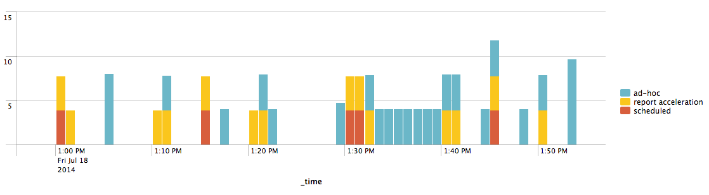
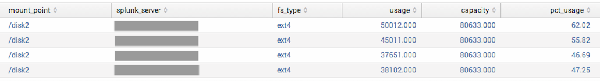
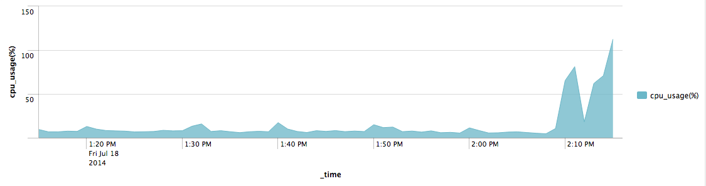
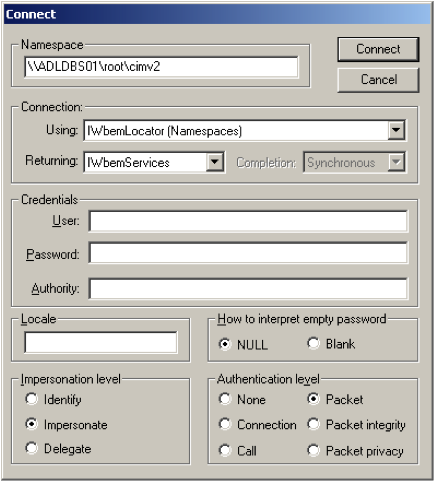
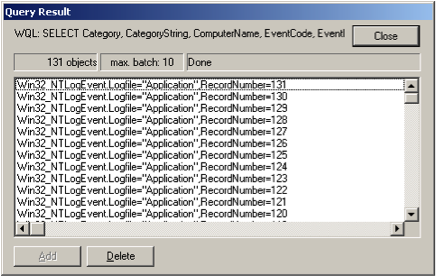

Welcome to the Splunk Enterprise Troubleshooting Manual!
Use this manual to troubleshoot your instance of Splunk.
As with all Splunk docs, use the comment box feedback link at the bottom of each page to make any suggestions.
Here's a brief description of each chapter you see in the left navigation bar:
Get oriented here. Find some tips about where to start with your troubleshooting.
Splunk Enterprise logs all sorts of things about itself. Find out what, where, and how in this section.
We're here to help! If you're stuck, do contact us! Details and tips in this section.
This section includes some of the most common scenarios we see in Splunk Support, with suggestions about what to do. Much more material is in the works here!
If you'd like a PDF of this manual, click the red Download the Troubleshooting Manual as PDF link in the table of contents bar on the left side of this page. A PDF version of the manual is generated on the fly for you, and you can save it or print it out to read later.
This topic is intended as a first step in either diagnosing your Splunk Enterprise problem yourself or asking for help.
For example, if the error occurs in a dashboard or alert, check the underlying search first to see whether the error appears there. When troubleshooting searches, it's almost always best to remove the dashboard layer as soon as possible.
For another example, does the problem exist in one app but not the other? With one user but not admins?
Basically, is there any case for which this does work?
Yes! So what has changed? Remember to think of both Splunk and non-Splunk factors. Was there a server outage? Network problems? Has any configuration or topology changed?
No, it never functioned normally. Check the operating environment and installation. Start with the system requirements in the Installation Manual.
Splunk has configuration files in several locations, with rules about which files take precedence over each other. Use btool to check which settings your Splunk instance is using. Read about btool in this manual.
The *.conf files are case-sensitive. Check settings and values against the spec and example configuration files in the Admin manual.
There are also a lot of settings in the .conf files that aren't exposed in Splunk Web. It's best to leave these alone unless you know what changing these settings might do.
Splunk has various internal log files that can help you diagnose problems. Read about the log files in this manual.
The Distributed Deployment Manual has a high-level overview of the Splunk data pipeline, breaking it into input, parsing, indexing, and search segments.
For more detail on each segment, see this Community Wiki article about how indexing works.
Hey, well done!
Check the (continuously growing) chapter in this manual on some of the most common symptoms and solutions.
If you need additional help or opinions, ask the Splunk community! The Community Wiki, Splunk Answers, and the #splunk IRC channel on efnet are available to everyone and provide a great resource.
Once you've found a way to fix the problem, test it! Test any noninvasive changes first. Then, test any changes that would create minor interruptions. Make sure no new issues arise from your tested solution.
Always test invasive or major changes in a sandbox environment before moving them to your production system! Your sandbox should be an independent system that mirrors the affected environment.
If you get stuck at any point, contact Splunk Support. Don't forget to send a diag! Read about making a diag in this manual.
Click the About link at the bottom left of most pages in Splunk Web to view a JavaScript overlay with the version and build numbers.
Use one minus or two minuses; Splunk gets it either way:
> ./splunk --version
Splunk 6.0 (build 181491)or
> ./splunk -version
Splunk 6.0 (build 181491)
You can get the version information from the file $SPLUNK_HOME/etc/splunk.version
> cat $SPLUNK_HOME/etc/splunk.version
VERSION=6.0
BUILD=181491
PRODUCT=splunk
PLATFORM=Darwin-x86_64
Splunk Enterprise indexes the splunk.version file into the _internal index and sends it along to the indexer by forwarders.
Here's a search that shows you how many installs you have of each Splunk Enterprise version:
index=_internal sourcetype=splunk_version | dedup host | top VERSION
The Splunk Enterprise configuration file system supports many overlapping configuration files in many different locations. How these configuration files interact with and take precedence over one another is described in "Configuration file precedence" in the Admin Manual. This flexibility can occasionally make it hard to figure out exactly which configuration value Splunk Enterprise is using.
To help you out, Splunk provides btool. This is a command line tool that can help you troubleshoot configuration file issues or just see what values are being used by your Splunk Enterprise installation.
Btool displays merged on-disk configurations. To view in-memory configurations, query the REST endpoint /services/properties/
Note: btool is not tested by Splunk and is not officially supported or guaranteed. That said, it's what our Support team uses when trying to troubleshoot your issues.
You can run btool to see all the configuration values in use by your Splunk instance.
From $SPLUNK_HOME/bin type:
./splunk cmd btool <conf_file_prefix> list
where <conf_file_prefix> is the name of the configuration file you're interested in (minus the .conf extension). The list literal specifies that you want to list the options.
For example, to see what settings transforms.conf is using, type:
./splunk cmd btool transforms list
You probably want to send the results of btool into a text file that you can peruse then delete, like this:
./splunk cmd btool transforms list > /tmp/transformsconfigs.txt
or if not to a file, at least pipe to grep like this:
./splunk cmd btool server list --debug | grep '\['
which determines which server.conf stanzas are being recognized.
Piping to a file is handy for all use cases of btool, but for simplicity we'll only explicitly mention it this once.
You can also run btool for a specific app in your Splunk installation. It will list all the configuration values in use by that app for a given configuration file.
To run btool, go to $SPLUNK_HOME/bin and type:
./splunk cmd btool --app=<app_name> <conf_file_prefix> list
where <app_name> is the name of the app you want to see the configurations for.
For example, if you want to know what configuration options are being used in props.conf by the Search app, type:
./splunk cmd btool --app=search props list
This returns a list of the props.conf settings currently being used for the Search app.
The app name is not required. In fact, it's often a good idea not to specify the app when using btool. In the case of btool, insight into all of your configurations can be helpful.
Another thing you can do with btool is find out from which specific app Splunk is pulling its configuration parameters for a given configuration file. To do this, add the --debug flag to btool like in this example for props.conf:
./splunk cmd btool props list --debug
Read about btool syntax in "Command line tools for use with Support".
Watch a video on using btool to troubleshoot configuration issues by a Splunk Support engineer.
Have questions? Visit Splunk Answers and see what questions and answers the Splunk community has using btool.
Splunk on Splunk (SoS) is an app that uses Splunk Enterprise diagnostic tools to analyze and troubleshoot your configuration. SoS contains views and tooling that allow you to do the following:
Download the Splunk on Splunk app from Splunkbase.
For information about installing and configuring the Splunk on Splunk app, see the Splunk on Splunk documentation.
Each view offers help to explain the significance of the different charts and panels shown, as well as the searches that populate them.
The SoS app (version 1.0) contains the following views:
Home: Provides an introduction to SoS.
Configuration File Viewer: Provides a layered view of the Splunk Enterprise configuration files, allowing you to search and compare files side by side.
Errors: Parses Splunk Enterprise internal logs to help expose errors and abnormal behavior. Contains dedicated search controls to help you locate the source of problems.
Warnings: Detects known problems that may exist on your Splunk Enterprise instance.
Crash Log Viewer: Detects and displays recent crash logs and correlates them with Splunk Enterprise log files.
Indexing Performance: Tracks indexing performance, allowing you to correlate measured latency and data volume with the size of event processing queues.
Search Detail Activity: Displays CPU utilization for all searches, providing various ways to analyze and compare searches.
UI and User Search Activity: Provides analysis of dashboards most viewed, user activity, time to completion, and other related data for searches.
Scheduler Activity: Shows a variety of performance and usage metrics for the search scheduler. Also, displays statistics on alert actions associated with scheduled searches.
Metrics: Shows license usage over time as well as different breakdowns of indexing throughput (per source, per source type, per host, per index) recorded in metrics.log. Also provides statistics on incoming and outgoing network traffic.
Splunk Enterprise keeps track of its activity by logging to various files in $SPLUNK_HOME/var/log/splunk.
The Splunk Enterprise internal log files are rolled based on size. You can change the default log rotation size by editing $SPLUNK_HOME/etc/log.cfg.
Search these files in Splunk Web by typing:
index=_internalHere is a list, with descriptions, of the internal logs in $SPLUNK_HOME/var/log/splunk. Splunk's internal logs are useful for troubleshooting or metric analysis.
Note that some log files are not created until your Splunk instance uses them, for example crawl.log.
| Log file name | Useful for? |
|---|---|
| audit.log | Information about user activity, most interestingly about a user logging in (or failing to log in), modifying a setting, or running a search. For example, if you're looking for information about a saved search, audit.log matches the name of a saved search (savedsearch_name) with its search ID (search_id), user, and time. With the search_id, you can look up that particular search elsewhere, like in the search dispatch directory. Read about audit events in the Securing Splunk Manual. |
| btool.log | Log of btool activity. Read about btool in this manual. |
| conf.log | Contains messages about configuration replication related to search head clustering. |
| crawl.log | Log of crawl activity. Read about crawl in the Getting Data In Manual. Crawl is now deprecated. |
| django_access.log | Django HTTP request log (equivalent to web_access.log) for the Django Bindings component of the Splunk Web Framework. |
| django_error.log | Raw Django error output from Splunk Web Framework (not really meant to be human readable). Used with link on error screens to see the full error in Splunk Web. |
| django_service.log | General Django related messages from Splunk Web Framework (equivalent to web_service.log) |
| export_metrics.log | Log of metrics related to exporting data with Hadoop Connect. |
| first_install.log | Shows version number. |
| inputs.log | Inputs found by crawl. This log file will be empty unless you use the crawl command. |
| intentions.log | Intentions activity. Read about intentions in the Developing Views and Apps for Splunk Web Manual. |
| license_audit.log | Deprecated. Look at license_usage.log instead of here. |
| license_usage.log | Indexed volume in bytes per pool, index, source, sourcetype, and host. Starting in 4.2, license_usage.log is available only on a Splunk license master. |
| metrics.log | Contains periodic snapshots of Splunk performance and system data, including information about CPU usage by internal processors and queue usage in Splunk's data processing. The metrics.log file is a sampling of the top ten items in each category in 30 second intervals, based on the size of _raw. It can be used for limited analysis of volume trends for data inputs. For more information about metrics.log, see About metrics.log and Work with metrics.log in this manual. |
| migration.log | A log of events during install and migration. Specifies which files were altered during upgrade. |
| mongod.log | Contains runtime messages from the Splunk Enterprise app key value store. |
| python.log | Python events within Splunk. Useful for debugging REST endpoints, communication with splunkd, PDF Report Server App, Splunk Web display issues, sendmail (email alerts), and scripted inputs. With web_service.log, one of the few Splunk logs that uses "WARNING" instead of "WARN" for second most verbose logging level. |
| remote_searches.log | Messages from StreamedSearch channel. This code is executed on the search peers when a search head makes a search request. So this file contains useful information on indexers regarding searches they're participating in. |
| scheduler.log | All actions (successful or unsuccessful) performed by the splunkd search and alert scheduler. Typically, this shows scheduled search activity. |
| searches.log | Beginning with Splunk 5, no longer used. Instead, use the following search syntax: | history. This shows all the searches that have been run, plus stats for the searches.
|
| searchhistory.log | No longer used. |
| splunkd.log | The primary log written to by the Splunk server. May be requested by Splunk Support for troubleshooting purposes. Any stderr messages generated by scripted inputs, scripted search commands, and so on, are logged here.
|
| splunkd_access.log | Any action done from splunkd through the UI is logged here, including splunkweb, the CLI, all POST GET actions, deleted saved searches, and other programs accessing the REST endpoints. Also logs the time taken to respond to the requests. Search job artifacts logged here include size of data returned with search. sourcetype="splunkd_access" |
| splunkd_stderr.log | The Unix standard error device for the server. Typically this contains (for *nix) times of healthy start and stop events, as well as various errors like exceptions, assertions, and errors generated by libraries and the operating system. |
| splunkd_stdout.log | The Unix standard output device for the server. |
| splunkd_ui_access.log | Starting in 6.2, contains a significant portion of the types of events that used to be logged in web_access.log. |
| splunkd-utility.log | This log is written to by the prereq-checking utils splunkd clone-prep-clear-config, splunkd validatedb, splunkd check-license, splunkd check-transforms-keys, and splunkd rest (for offline CLI). Each util logs Splunk version, some basic config, and current OS limits like max number of threads, and then messages specific to the util. Consult this log file when splunkd didn't start.
|
| web_access.log | Requests made of Splunk Web, in an Apache access_log format. Much of the types of events logged here are logged in splunkd_ui_access.log starting in 6.2. |
| web_service.log | Primary log written by splunkweb. Records actions made by splunkweb. This and python.log are the only logs that, in second most verbose logging level, write messages with "WARNING" instead of Splunk log files' usual "WARN." |
Splunk Enterprise platform instrumentation refers to data that your Splunk Enterprise deployment logs in the _introspection index. It gathers data about your Splunk instance and operating system and writes it to log files that you can search later to aid in troubleshooting a variety of problems. You can also view the data at REST endpoints.
Read more in "About Splunk Enterprise platform instrumentation" in this manual.
Splunk also creates search logs. Note that these are not indexed to _internal.
Each search has its own directory for all information specific to the search, including its search logs. The search's directory is named with (among other parameters) the search_id. (Match a search to its search_id in audit.log.) You'll find the search directory in $SPLUNK_HOME/var/run/splunk/dispatch/.
If you have any long-running real-time searches, you might want to adjust the maximum size of your search logs. These logs are rotated when they reach a default maximum size of 25 MB. Splunk keeps up to five of them for each search, so the total log size for a search can conceivably grow as large as 125 MB.
Most searches are unlikely to generate logs anywhere near 25 MB in size; however, it can become an issue if you have ongoing real-time searches.
To adjust the log size, edit $SPLUNK_HOME/etc/log-searchprocess.cfg.
Splunk has a debugging parameter. Read about enabling debug logging in this manual.
Except where noted above, Splunk's internal logging levels are DEBUG INFO WARN ERROR FATAL (from most to least verbose).
Note: Running Splunk with debugging turned on outputs a large amount of information. Make sure you do not leave debugging on for any significant length of time.
To view and manage logs, you can use Splunk Web:
1. Navigate to Settings > System settings > System logging. This generates a list of log channels and their status.
2. To change the logging level for a particular log channel, click on that channel. This brings up a page specific to that channel.
3. On the log channel's page, you can change its logging level.
When you change the logging level, note the following:
Settings > System settings > System logging is meant only for dynamic and temporary changes to Splunk log files. For permanent changes, use $SPLUNK_HOME/etc/log.cfg instead.
Splunk comes with two sample data models. These data models are constructed from Splunk's internal logs. By interacting with them, you can learn about Splunk's log files and about data models in one fell swoop.
To access the internal log data models, click Pivot. By default, you should see two data models, "Splunk's Internal Audit Logs - SAMPLE" and "Splunk's Internal Server Logs - SAMPLE."
Note that there is a known issue in the alerts section of the "Splunk's Internal Server Logs" data model.
Splunk's internal logging levels are DEBUG INFO WARN ERROR FATAL (from most to least verbose). This topic gives a few popular options for how you might want to put Splunk into debug mode.
Be warned, Splunk's debug mode is extremely verbose. All the extra chatter might obscure something that might have helped you diagnose your problem. And running Splunk in debug mode for any length of time will make your internal log files really pretty unwieldy. Running debug mode is not recommended on production systems.
Splunk has a debugging parameter (--debug) that you can use when starting Splunk from the CLI in *nix. This command outputs logs to $SPLUNK_HOME/var/log/splunk/splunkd.log. To enable debug logging from the command line:
$SPLUNK_HOME/bin.
splunkd.log file by moving it to a new filename, like splunkd.log.old.
splunk start --debug.
splunkd.log file elsewhere and restore your old one.
Specific areas can be enabled to collect debugging details over a longer period with minimal performance impact. See the category settings in the file $SPLUNK_HOME/etc/log.cfg to set specific log levels without enabling a large number of categories as with --debug. Restart Splunk after changing this file.
Important: Changes to $SPLUNK_HOME/etc/log.cfg are overwritten if you upgrade your version of Splunk.
Note: Not all messages marked WARN or ERROR indicate actual problems with Splunk; some indicate that a feature is not being used.
Note also that this option is not available on Windows. To enable debugging on Splunk running on Windows, enable debugging on a specific processor in Splunk Web or using log.cfg.
You can enable these DEBUG settings via Splunk Web if you have admin privileges. Navigate to Settings > System settings > System logging. Search for the processor names using the text box. Click on the processor name to change the logging level to DEBUG. You do not need to restart Splunk. In fact, these changes will not persist if you restart the Splunk instance.
If you want the processors to be in DEBUG on startup, or if you want to turn on debugging for a few processors or for a lightweight forwarder (with no Splunk Web), edit the $SPLUNK_HOME/etc/log.cfg file directly. Back up your log.cfg file before making any changes.
In $SPLUNK_HOME/etc/log.cfg, find the category.* entry that relates to the processor you are interested in, and change the INFO or WARN string to DEBUG. There will not always be an existing entry for the processor you are interested in, and it may take some digging through the logs or documentation to find the correct one.
For example, to see how often Splunk is checking on a particular file, put 'FileInputTracker' in DEBUG. Update the existing entry to readcategory.FileInputTracker=DEBUG
Or for investigating problems monitoring files, use the FileInputTracker and selectProcessor categories.
Restart Splunk. Now every time Splunk checks the inputs file, it will be recorded in $SPLUNK_HOME/var/log/splunk/splunkd.log. Remember to change these settings back when you are finished investigating.
If a default level is not specified for a category, the logging level defaults to your rootCategory setting.
Note: Leave category.loader at INFO. This is what gives us our build and system info.
To change the maximum size of a log file before it rolls, change the maxFileSize value (in bytes) for the desired file:
appender.A1=RollingFileAppender
appender.A1.fileName=${SPLUNK_HOME}/var/log/splunk/splunkd.log
appender.A1.maxFileSize=250000000
appender.A1.maxBackupIndex=5
appender.A1.layout=PatternLayout
appender.A1.layout.ConversionPattern=%d{%m-%d-%Y %H:%M:%S.%l} %-5p %c - %m%n
If you have duplicate lines in log.cfg, the last line takes precedence. For example,
category.databasePartitionPolicy=INFO
category.databasePartitionPolicy=DEBUG
will give you DEBUG, but in the other order it will not.
The other log-*.cfg files behave similarly when you add categories. To set only some things in a search.log into debug mode, then in log-searchprocess.cfg just add a new category line after the rootCategory:
rootCategory=INFO,searchprocessAppender category.whatever=DEBUG appender.searchprocessAppender=RollingFileAppender
This leaves everything else as it was, which means only the debug messages you want are generated. Putting rootCategory into DEBUG mode makes the dispatch directories huge, so it's not a good choice for long-running debug.
You can put log.cfg settings into a local file, log-local.cfg file, residing in the same directory as log.cfg. The settings in log-local.cfg take precedence. And unlike log.cfg, the log-local.cfg file doesn't get overwritten on upgrade.
In Splunk 4.1 and later, you can access a debugging endpoint that shows status information about monitored files:
https://your-splunk-server:8089/services/admin/inputstatus/TailingProcessor:FileStatus
./splunk _internal call /services/server/logger/TailingProcessor -post:level DEBUG
Note: This search will return the message "HTTP Status: 200". This is not an error and is normal.
From 4.2, you can also set this way;
./splunk set log-level TailingProcessor -level DEBUG
Search processes obey the etc/log-searchprocess.cfg rules. Similar to splunkd, they can be overridden in etc/log-searchprocess-local.cfg.
All loggers can be set to DEBUG by adding a line such as
rootCategory=DEBUG,searchprocessAppender
Specific loggers can be set to debug as well, for example:
category.UnifiedSearch=DEBUG
category.IndexScopedSearch=DEBUG
This change takes effect immediately for all searches started after the change.
Change the logging level for the splunkweb process by editing the file:
$SPLUNK_HOME/etc/log.cfg
$SPLUNK_HOME/etc/log-local.cfg
Locate the [python] stanza and change the contents to:
[python]
splunk = DEBUG
# other lines should be removed
The logging component names are hierarchical so setting the top level splunk component will affect all loggers unless a more specific setting is provided, like splunk.search = INFO.
Restart the splunkweb process with the command ./splunk restart splunkweb. The additional messages are output in the file $SPLUNK_HOME/var/log/splunk/web_service.log.
This topic is an overview of metrics.log.
Metrics.log has a variety of introspection information for reviewing product behavior.
First, metrics.log is a periodic report, taken every 30 seconds or so, of recent Splunk software activity.
By default, metrics.log reports the top 10 results for each type. You can change that number of series from the default by editing the value of maxseries in the [metrics] stanza in limits.conf.
Here is a sample line from metrics.log:
01-27-2010 15:43:54.913 INFO Metrics - group=pipeline, name=parsing, processor=utf8, cpu_seconds=0.000000, executes=66, cumulative_hits=301958
First, boiler plate: the timestamp, the "severity," which is always INFO for metrics events, and then the kind of event, "Metrics."
The next field is the "group." This indicates what kind of metrics data it is. There are a few groups in the file, including:
Pipeline messages are reports on the Splunk pipelines, which are the strung-together pieces of "machinery" that process and manipulate events flowing into and out of the Splunk system. You can see how many times data reached a given machine in the Splunk system (executes), and you can see how much cpu time each machine used (cpu_seconds).
Plotting totals of cpu seconds by processor can show you where the cpu time is going in indexing activity. Looking at numbers for executes can give you an idea of data flow. For example if you see:
group=pipeline, name=merging, processor=aggregator, ..., executes=998
group=pipeline, name=merging, processor=readerin, ... , executes=698
group=pipeline, name=merging, processor=regexreplacement, ..., executes=698
group=pipeline, name=merging, processor=sendout, ... , executes=698
then it's pretty clear that a large portion of your items aren't making it past the aggregator. This might indicate that many of your events are multiline and are being combined in the aggregator before being passed along.
Read more about Splunk's data pipeline in "How data moves through Splunk" in the Distributed Deployment Manual.
Queue messages look like
... group=queue, name=parsingqueue, max_size=1000, filled_count=0, empty_count=8, current_size=0, largest_size=2, smallest_size=0
Most of these values aren't interesting. But current_size, especially considered in aggregate, across events, can tell you which portions of Splunk indexing are the bottlenecks. If current_size remains near zero, then probably the Splunk (indexing) system is not being taxed in any way. If the queues remain near 1000, then more data is being fed into the system (at the time) than it can process in total.
Sometimes you will see messages such as
... group=queue, name=parsingqueue, blocked!!=true, max_size=1000,
filled_count=0, empty_count=8, current_size=0, largest_size=2, smallest_size=0This message contains the "blocked" string, indicating that it was full, and someone tried to add more, and couldn't. A queue will become unblocked as soon as the code pulling items out of it pulls an item. Many blocked queue messages in a sequence indicate that data is not flowing at all for some reason. A few scattered blocked messages indicate that flow control is operating, and is normal for a busy indexer.
If you want to look at the queue data in aggregate, graphing the average of current_size is probably a good starting point.
There are queues in place for data going into the parsing pipeline, and for data between parsing and indexing. Each networking output also has its own queue, which can be useful to determine whether the data is able to be sent promptly, or alternatively whether there's some network or receiving system limitation.
Generally, filled_count and empty_count cannot be productively used for inferences.
Thruput messages (similar to the English word "throughput") come in a few varieties.
Thruput is measured in the indexing pipeline. If your data is not reaching this pipeline for some reason, it will not appear in this data.
First there is a catchall line, which looks like this:
... group=thruput, name=index_thruput, instantaneous_kbps=0.287598, instantaneous_eps=1.000000, average_kbps=0.270838, total_k_processed=74197, load_average=1.345703M</code>
This is the best line to look at when tuning performance or evaluating indexing load. It tries to capture the total indexing data load.
Note: In thruput lingo, "kbps" does not mean kilobits per second, it means kilobytes per second. The industry standard term would be to write this something like KBps.
The average_kbps in the group=thruput catchall indicates the average since Splunk Enterprise started.
instantaneous_kbps indicates the average kbps for the reporting interval (equivalent to kbps for the breakouts below.)
The most useful figure to look at in aggregate is probably instantaneous_kbps over time.
Following the catchall, there can be variety of breakouts of the indexing thruput, including lines like:
... group=per_host_thruput, series="jombook.splunk.com", kbps=0.261530, eps=1.774194, kb=8.107422, ev=2606, avg_age=420232.710668, max_age=420241
... group=per_index_thruput, series="_internal", kbps=0.261530, eps=1.774194, kb=8.107422, ev=2606, avg_age=420232.710668, max_age=420241
... group=per_source_thruput, series="/applications/splunk4/var/log/splunk/metrics.log", kbps=0.261530, eps=1.774194, kb=8.107422, ev=2606, avg_age=420232.710668, max_age=420241
... group=per_sourcetype_thruput, series="splunkd", kbps=0.261530, eps=1.774194, kb=8.107422, ev=2606, avg_age=420232.710668, max_age=420241
In thruput messages the data load is broken out by host, index, source, and source type. This can be useful for answering two questions:
The series value identifies the host or index, etc. The kb value indicates the number of kilobytes processed since the last sample. Graphing kb in aggregate can be informative. The summary indexing status dashboard uses this data, for example.
ev is a simple total count of events during the sampling period.
kbps, as before, indicates kilobytes per second averaged over the sampling period.
The avg_age and max_age refer to the difference between the time that the event was seen by the thruput processor in the indexing queue, and the time when the event occurred (or more accurately, the time that Splunk decided the event occurred).
max_age is the largest difference between the current time and the perceived time of the events coming through the thruput processor.
avg_age is the average difference between the current time and the perceived time of the events coming through the thruput processor.
Note: The per_x_thruput categories are not complete. Remember that by default metrics.log shows the 10 busiest of each type, for each sampling window. If you have 2000 active forwarders, you cannot expect to see the majority of them in this data. You can adjust the sampling quantity, but this will increase the chattiness of metrics.log and the resulting indexing load and _internal index size. The sampling quantity is adjustable in limits.conf, [metrics] maxseries = num.
Ignore the eps value, as it has accuracy issues.
udpin_connections lines are essentially metering on udp input.
group=udpin_connections, 2514, sourcePort=2514, _udp_bps=0.00, _udp_kbps=0.00,
_udp_avg_thruput=0.00, _udp_kprocessed=0.00, _udp_eps=0.00
Some should be relatively self-explanatory.
Don't have info on avg_thruput at this time.
Be aware that it's quite achievable to max out the ability of the operating system, let alone Splunk, to handle UDP packets at high rates. This data might be useful to determine if any data is coming in at all, and at what times it rises. There is no guarantee that all packets sent to this port will be received and thus metered.
The mpool lines represent memory used by the Splunk indexer code only (not any other pipeline components). This information is probably not useful to anyone other than Splunk developers.
group=mpool, max_used_interval=4557, max_used=53878, avg_rsv=180, capacity=268435456, used=0
max_used_interval represents the number of bytes used during the reporting interval (since the last output).
max_used represents the maximum amount of memory, in bytes, in use at any time during the component's lifetime (most likely since last starting Splunk).
avg_rsv is the average size of a memory allocation across the run time of the system.
capacity is the limit on memory use for the indexer.
used is the current indexer's current memory use.
In this case we can see that some memory is sometimes in use, although at the time of the sample, none is in use, and that generally the use is low.
These messages are primarily debugging information over the Splunk internal cache of processing state and configuration data for a given data stream (host, source, or source type).
group=map, name=pipelineinputchannel, current_size=29, inactive_channels=4,
new_channels=0, removed_channels=0, reclaimed_channels=0, timedout_channels=0,
abandoned_channels=0
current_size is the number of total channels loaded in the system at the end of the sampling period.
inactive_channels is the number of channels that have no entries in any pipeline referring to them (typically for recently seen data but not for data currently being processed) at the end of the sampling period.
new_channels is the number of channels created during the sampling period, meaning that new data streams arrived, or a data stream that was aged out was created again.
removed_channels is the number of channels destructed during the sampling period, which means that enough pressure existed to push these channels out of set (there were too many other new data streams).
reclaimed_channels is the number of channels that were repurposed during the sampling period. This will happen for reasons similar to new_channels, based on the size of the utilization, etc.
timedout_channels is the number of channels that became unused for a long enough time to be considered stale and the information to be culled. Typically a timedout file or data source hasn't been producing data for some time.
abandoned_channels is the number of channels that were terminated by Splunk forwarding, where the forwarder stopped communicating to an indexer, so the indexer shut them down.
Currently there is only one type of these messages, name=indexer, task=indexer_service. The message describes how the indexer has spent time over each interval window.
group=subtask_seconds, name=indexer, task=indexer_service,
replicate_semislice=0.000000, throttle_optimize=0.00015, flushBlockSig=0.000000,
retryMove_1hotBkt=0.000000, size_hotBkt=0.000000, roll_hotBkt=0.000000,
chillOrFreeze=0.000000, update_checksums=0.000000, fork_recovermetadata=0.000000,
rebuild_metadata=0.000300, update_bktManifest=0.000000, service_volumes=0.000105,
update_bktManifest=0.000000, service_volumes=0.000105, service_maxSizes=0.000000
service_externProc=0.000645
throttle_optimize subtask represents time that the indexer spends waiting for splunk_optimize processes to reduce the count of .tsidx files to a reasonable level within hot buckets. Because splunk_optimize can in some cases run more slowly merging .tsidx files than the indexer runs while generating them, this flow-control state must exist for splunk_optimize to catch up. When this throttling occurs, messages are logged to splunkd.log in category DatabasePartitionPolicy similar to "idx=<idxname> Throttling indexer, too many tsidx files in bucket."
rebuild_metadata subtask represents time that the indexer spends generating new copies of .data files in hot buckets. This can mean writing out Hosts.data, Sourcetypes.data, Sources.data, or Strings.data. Typically the largest cost is for Strings.data in configurations where a large amount of data is directed to this file. Setting the MetaData log channel to DEBUG can provide more information on which buckets and files might be involved in a slowdown.
This topic is an example of a problem you can solve using metrics.log.
You might want to identify a data input that has suddenly begun to generate uncharacteristically large numbers of events. If this input is hidden in a large quantity of similar data, it can be difficult to determine which one is actually the problem. You can find it by searching the internal index (add index=_internal to your search) or just look in metrics.log itself in $SPLUNK_HOME/var/log/splunk.
There's a lot more in metrics.log than just volume data, but for now let's focus on investigating data inputs.
For incoming events, the amount of data processed is in the thruput group, as in per_host_thruput. In this example, you're only indexing data from one host, so per_host_thruput actually can tell us something useful: that right now host "grumpy" indexes around 8k in a 30-second period. Since there is only one host, you can add it all up and get a good picture of what you're indexing, but if you had more than 10 hosts you would only get a sample.
03-13-2008 10:49:57.634 INFO Metrics - group=per_host_thruput, series="grumpy", kbps=0.245401, eps=1.774194, kb=7.607422
03-13-2008 10:50:28.642 INFO Metrics - group=per_host_thruput, series="grumpy", kbps=0.237053, eps=1.612903, kb=7.348633
03-13-2008 10:50:59.648 INFO Metrics - group=per_host_thruput, series="grumpy", kbps=0.217584, eps=1.548387, kb=6.745117
03-13-2008 10:51:30.656 INFO Metrics - group=per_host_thruput, series="grumpy", kbps=0.245621, eps=1.741935, kb=7.614258
03-13-2008 10:52:01.661 INFO Metrics - group=per_host_thruput, series="grumpy", kbps=0.311051, eps=2.290323, kb=9.642578
03-13-2008 10:52:32.669 INFO Metrics - group=per_host_thruput, series="grumpy", kbps=0.296938, eps=2.322581, kb=9.205078
03-13-2008 10:53:03.677 INFO Metrics - group=per_host_thruput, series="grumpy", kbps=0.261593, eps=1.838710, kb=8.109375
03-13-2008 10:53:34.686 INFO Metrics - group=per_host_thruput, series="grumpy", kbps=0.263136, eps=2.032258, kb=8.157227
03-13-2008 10:54:05.692 INFO Metrics - group=per_host_thruput, series="grumpy", kbps=0.261530, eps=1.806452, kb=8.107422
03-13-2008 10:54:36.699 INFO Metrics - group=per_host_thruput, series="grumpy", kbps=0.313855, eps=2.354839, kb=9.729492
For example, you might know that access_common is a popular source type for events on this Web server, so it would give you a good idea of what was happening:
03-13-2008 10:51:30.656 INFO Metrics - group=per_sourcetype_thruput, series="access_common", kbps=0.022587, eps=0.193548, kb=0.700195
03-13-2008 10:52:01.661 INFO Metrics - group=per_sourcetype_thruput, series="access_common", kbps=0.053585, eps=0.451613, kb=1.661133
03-13-2008 10:52:32.670 INFO Metrics - group=per_sourcetype_thruput, series="access_common", kbps=0.031786, eps=0.419355, kb=0.985352
03-13-2008 10:53:34.686 INFO Metrics - group=per_sourcetype_thruput, series="access_common", kbps=0.030998, eps=0.387097, kb=0.960938
03-13-2008 10:54:36.700 INFO Metrics - group=per_sourcetype_thruput, series="access_common", kbps=0.070092, eps=0.612903, kb=2.172852
03-13-2008 10:56:09.722 INFO Metrics - group=per_sourcetype_thruput, series="access_common", kbps=0.023564, eps=0.290323, kb=0.730469
03-13-2008 10:56:40.730 INFO Metrics - group=per_sourcetype_thruput, series="access_common", kbps=0.006048, eps=0.096774, kb=0.187500
03-13-2008 10:57:11.736 INFO Metrics - group=per_sourcetype_thruput, series="access_common", kbps=0.017578, eps=0.161290, kb=0.544922
03-13-2008 10:58:13.748 INFO Metrics - group=per_sourcetype_thruput, series="access_common", kbps=0.025611, eps=0.225806, kb=0.793945
But you probably have more than 10 source types, so at any particular time some other one could spike and access_common wouldn't be reported. per_index_thruput and per_source_thruput work similarly.
With this in mind, let's examine the standard saved search "KB indexed per hour last 24 hours".
index=_internal metrics group=per_index_thruput NOT debug NOT sourcetype=splunk_web_access | timechart fixedrange=t span=1h sum(kb) | rename sum(kb) as totalKB
This means: look in the internal index for metrics data of group per_index_thruput, ignore some internal stuff and make a report showing the sum of the kb values. For cleverness, we'll also rename the output to something meaningful, "totalKB". The result looks like this:
sum of kb vs. time for results in the past day
_time totalKB
1 03/12/2008 11:00:00 922.466802
2 03/12/2008 12:00:00 1144.674811
3 03/12/2008 13:00:00 1074.541995
4 03/12/2008 14:00:00 2695.178730
5 03/12/2008 15:00:00 1032.747082
6 03/12/2008 16:00:00 898.662123
Those totalKB values just come from the sum of kb over a one hour interval. If you like, you can change the search and get just the ones from grumpy:
index=_internal metrics grumpy group=per_host_thruput | timechart fixedrange=t span=1h sum(kb) | rename sum(kb) as totalKB
sum of kb vs. time for results in the past day
_time totalKB
1 03/12/2008 11:00:00 746.471681
2 03/12/2008 12:00:00 988.568358
3 03/12/2008 13:00:00 936.092772
4 03/12/2008 14:00:00 2529.226566
5 03/12/2008 15:00:00 914.945313
6 03/12/2008 16:00:00 825.353518
We see that grumpy was unusually active in the 2 pm time bin. With this knowledge, we can start to hunt down the culprit by, for example, source type or host.
Have questions? Visit Splunk Answers and see what questions and answers the Splunk community has about working with metrics.log.
Splunkd and splunkweb both produce access logs in a format similar to common Apache webserver access log formats.
Splunkd produces splunkd_access.log, and splunkweb records logs in web_access.log. Both log files are close approximations of the Apache combined log format.
Apache formats are described briefly in the Apache HTTP Server documentation. For example, see Apache 2.4 log file documentation.
Here is a typical line in splunkd_access.log:
127.0.0.1 - - [21/Oct/2014:13:50:25.662 -0700] "GET /services/server/info?output_mode=json HTTP/1.1" 200 1566 - - - 1ms
These fields are
<address> - <user> [<time>] "<request>" <status> <response_size> - - - <duration>
address: The IP address from which the HTTP client socket appears to originate. Typically these requests originate from splunkweb and come over the localhost/loopback address.
The second field is a placeholder for the unused identd field.
user: The splunk user, if any, making the request. System accesses on behalf of no particular user will appear as "-".
timestamp: This is the time that splunkd finished reading in the request. However, the log event is written out when the http server finishes writing the response, so these timestamps can be out of order.
request: The HTTP request made by the client consisting of an action, a URL, and a protocol version.
status: The HTTP status returned as part of the response.
response_size: The size of the body of the response in bytes
Three additional placeholders. (If you know what these stand in for, send docs feedback below!)
duration: The time it took from the completion of reading the request to completely writing out the response. This value is logged explicitly in milliseconds.
Between the definitions for timestamp and duration, you can infer the response completion time by adding duration to the timestamp.
A web access line is similar:
127.0.0.1 - admin [21/Oct/2014:14:05:05.044 -0700] "GET /en-US/api/message/index HTTP/1.1" 200 341 "http://mcp.sv.splunk.com:62100/en-US/manager/search/saved/searches" "Mozilla/5.0 (Macintosh; Intel Mac OS X 10.8; rv:32.0) Gecko/20100101 Firefox/32.0" - 5446ca810b7fb1d8551110 11ms
Here the format is:
<address> - <user> [<time>] "<request>" <status> <response_size> "<referer>" "<user agent>" - <session_id> <duration>
Address, user, time, request, status, response_size, and duration are the same as in splunkd_access.log. The new components here are:
referer: referer [sic] is the URL that the client told us provided the link to the URL that was accessed.
user agent: The string the http client used to identify itself.
session_id: This represents the splunkweb session. Can be used to follow a stream of requests from a particular client. These sessions are transient starting in Splunk Enterprise 6.2.0.
Starting in Splunk Enterprise 6.2.0, splunkd handles requests from the browser that splunkweb handled pre-6.2.0. This file represents those requests. The format is identical to web_access.log.
Splunk Enterprise platform instrumentation refers to data that Splunk Enterprise logs and uses to populate the _introspection index. It generates data about your Splunk instance and environment and writes that data to log files to aid in reporting on system resource utilization and troubleshooting problems with your Splunk Enterprise deployment. You can also view the latest instrumentation data at REST endpoints.
Platform instrumentation is included in Splunk Enterprise as an add-on, sometimes referred to as the "introspection_generator_addon."
The introspection files contain data about:
See "What data gets logged" for more information.
Events are written to two log files in $SPLUNK_HOME/var/log/introspection. Non-forwarders tail these log files and place results into the local _introspection index. Forwarders, which have no local indexes, forward these events to indexers.
The two log files are disk_objects.log and resource_usage.log. See "What gets logged" for a breakdown of what data goes into which file.
To find platform instrumentation events, qualify your searches:
index=_introspectionIf you are upgrading from a Splunk Enterprise version pre-6.1, expect the new log files to use a bit of disk space (an estimated 300 MB). The _introspection index's disk usage, on the other hand, varies from deployment to deployment.
Each log file has a maximum size of 25 Mb. You can change this limit in log.cfg. You can have up to six instances of each file, according to your log rotation policy. That is, resource_usage.log, resource_usage.log.1, ... resource_usage.log.5, and the same for disk_objects.log. Thus, the introspection log files by default can take up to 300 MB of disk space.
This feature is implemented as an auxiliary low-profile long-running process. This process is where resource usage (RU) introspection data is collected. Collecting disk object (DO) introspection data requires no extra I/O, as it leverages information that other parts of splunkd have already collected and cached.
See the upgrade docs in the Installation Manual for upgrade information.
See "Configure platform instrumentation" for instructions on tuning this feature.
This topic describes the contents of log files that are tailed to populate the _introspection index. For the log files that populate _internal, see "What Splunk logs about itself" in this manual.
These log files comply with the Common Information Model (CIM). See the the CIM add-on documentation for more information.
"Extra field" indicates a field that is not logged by default. Read more about configuring polling intervals and enabling this feature on a universal forwarder in "Configure platform instrumentation."
Exposes OS resource usage info for just Splunk processes, broken down by process. Splunk processes include splunkd, splunkweb, Splunk search processes, splunkd-launched (fsck, splunk-optimize), and modular or scripted inputs launched on behalf of splunkd.
These fields are available:
$SPLUNK_HOME/var/log/introspection/resource_usage.log
_introspection index
server/status/resource-usage/splunk-processes.
Access information about operating system resource utilization, broken down by Splunk Enterprise processes. Four fields here are "extra" fields, not logged by default. Read about populating extra fields in "Configure platform instrumentation."
See the list of output fields at system/server/status/resource-usage/splunk-processes in the REST API Reference Manual.
Splunk Enterprise can log all the above data for search processes (except args). In addition, it logs some additional information about search processes, in a subsection called search_props.
See the list of output fields at system/server/status/resource-usage/splunk-processes in the REST API Reference Manual. The search process fields are embedded within the larger process table, at the search_props entry.
Access host-level, dynamic CPU utilization and paging information.
These fields are available:
resource_usage.log
_introspection index
server/status/resource-usage/hostwide.
See the list of output fields at system/server/status/resource-usage/hostwide in the REST API Reference Manual.
These fields are available in the log file $SPLUNK_HOME/var/log/introspection/disk_objects.log
Additionally, the latest snapshot of these field values are available at endpoints as itemized below.
Splunk Enterprise server configuration information (static server characteristics; dynamic characteristics go under server/status).
See the list of output fields at system/server/info in the REST API Reference Manual.
Lists the Splunk Enterprise volume(s).
See the list of output fields at data/index-volumes in the REST API Reference Manual.
Characterizes persisted objects at the volume level.
See the list of output fields at index/data/index-volumes/{Name} in the REST API Reference Manual.
Provides information about Splunk Enterprise index buckets.
See the list of output fields at index/data/indexes-extended in the REST API Reference Manual.
Provides bucket-level information for the specified index.
See the list of output fields at data/indexes-extended{Name} in the REST API Reference Manual.
Accesses search job information.
See the list of output fields at server/status/dispatch-artifacts in the REST API Reference Manual.
Accesses information about the private BTree database. Gives an idea of fishbucket growth. The fishbucket is a directory, $SPLUNK_DB/fishbucket/splunk_private_db/, that keeps a record about each file input. Most fundamentally, this record keeps track of how far into the file we've read, so that if splunkd is stopped and then restarted, it'll know where in each file input to resume reading.
See the list of output fields at server/status/fishbucket in the REST API Reference Manual
Search concurrency limits for a standalone Splunk Enterprise instance.
See the list of output fields at system/server/status/limits/search-concurrency in the REST API Reference Manual.
Helps track disk usage. These results show only partitions with Splunk disk objects (indexes, volumes, logs, fishbucket, search process artifacts) on them. There is a partitions event for each file system, and each event gives the respective file system type.
A file system (or "volume" in Windows) is a logical concept, identified on UNIX by a number called "device ID." A file system has the property of type (format). For example: ZFS, EXT3.
A partition is a physical concept, simply a chunk of hard drive (or solid state drive). All we know about a partition is its size. A file system can reside on multiple partitions. Splunk Enterprise does not report at the partition level.
See the list of output fields at server/status/partitions-space in the REST API Reference Manual.
This topic is about log files that are tailed to populate the _introspection index. Read about this feature in "About Splunk Enterprise platform instrumentation."
This topic helps you configure the default logging interval and enable or disable logging.
This table summarizes the default settings:
| Instance type | Resource usage | Disk objects: indexes, bucket superdirectories, volumes, search dispatch artifacts | Disk objects: fishbucket, partitions |
|---|---|---|---|
| Universal forwarder | every 600 sec (disabled by default) | N/A (UFs do not have indexes) | every 600 sec |
| non-UFs | every 10 sec | every 600 sec | every 600 sec |
See "What gets logged" for details about what data is logged.
The introspection generator add-on is disabled by default on a universal forwarder. To enable:
in the forwarder's $SPLUNK_HOME/etc/apps/introspection_generator_addon/local/app.conf, set
[install]
state = enabledTo facilitate the management of collecting introspection logs from Splunk Universal Forwarders, we will use the Splunk Deployment Server to enable the introspection generator add-on.
The instructions require the use of a deployment server running Splunk Enterprise 6.2 or later. Additionally, you must have command line access to the deployment server host, as the changes cannot be completed using the Forwarder Management interface provided with the deployment server.
The introspection generator add-on is only available on Splunk Enterprise version 6.1 or later. All forwarder instances must be configured as deployment clients to a centralized deployment server.
/opt/splunk
$SPLUNK_HOME$/etc/deployment-apps/introspection_generator_addon
$SPLUNK_HOME$/etc/deployment-apps/introspection_generator_addon/local
app.conf file under $SPLUNK_HOME$/etc/deployment-apps/introspection_generator_addon/local
app.conf file and enable the add-on by adding:
[install]
state = enabled
7. Save the changes. Review the changes to the app.conf file and the path as a validation step.
excludeFromUpdate command The excludeFromUpdate prevents the deployment server from overwriting the contents of defined folders in an app. For more examples, see the "serverclass.conf" in the Admin Manual.
For this task, we will use excludeFromUpdate to enable the introspection generator add-on, while preventing the deployment server from making any changes to the add-on by blocking it from overwriting the contents in the app/introspection_generator_addon/default and app/introspection_generator_addon/bin folders.
serverclass.conf file, adding the app to a serverclass for deployment 1. Find the primary copy of the serverclass.conf file. The location and contents will vary between deployments, but some common locations are: $SPLUNK_HOME$/etc/system/local/, and $SPLUNK_HOME$/etc/apps/*/local. To use btool to find all serverclass.conf files referenced on the deployment server, run: ./splunk btool --debug serverclass list and review the output.
2. Create a new app definition for deploying the changes to the introspection generator add-on. This task is dependent upon the local environment and how the Splunk administrator has chosen to assign and manage apps deployed to forwarders. Many deployments use one serverclass definition to deploy and manage the most common apps for forwarders. For the purposes of this procedure, all universal forwarders are included under one encompassing serverclass named PrimaryForwarders.
3. Define the field excludeFromUpdate command at the app level.
[serverClass:PrimaryForwarders:app:introspection_generator_addon]
excludeFromUpdate = $app_root$/default, $app_root$/bin
restartSplunkd = True
4. Save the changes. Review the changes to the serverclass.conf file and the path as a validation step.
1. Utilize your enterprise change control system to file the requirements and changes for this procedure.
2. Run ./splunk reload deploy-server to reload the deployment server and present the changes to all forwarder hosts at their next check-in interval. The command can be scripted to run on the deployment server after working hours.
Use the search head to validate the introspection logs are being forwarded. Example: index=_introspection host=<forwarder_host> | stats count by source, component
Four fields (in per-process resource usage data) are not populated by default but can be turned on. See "What gets logged" for information.
In server.conf you can tell Splunk Enterprise to acquire the "Extra" fields by setting acquireExtra_i_data to true. For example:
[introspection:generator:disk_objects]
disabled = false
acquireExtra_i_data = true
collectionPeriodInSecs = 600Search processes are polled every 10 seconds (600 seconds on a universal forwarder) by a low-profile process. For healthy Splunk Enterprise deployments, we do not expect this to cause any performance problems. But on a deployment that is already prone to performance problems such as a slow pooled search head environment, there might be some performance implications.
In server.conf you can increase the polling period by collection type (that is, resource usage data or disk object data).
The default settings (for anything other than a universal forwarder) are:
[introspection:generator:disk_objects]
disabled = false
acquireExtra_i_data = false
collectionPeriodInSecs = 600
[introspection:generator:resource_usage]
disabled = false
acquireExtra_i_data = false
collectionPeriodInSecs = 10
On a universal forwarder, the default resource usage collection period is 600 seconds.
It is possible to disable introspection logging, although in most cases, it's preferable to merely increase the polling interval.
You can turn off all introspection collection (and subsequent logging) by disabling the Introspection Generator Add-On.
In the $SPLUNK_HOME/etc/apps/introspection_generator_addon/local/app.conf file, set
[install]
state = disabled
In server.conf you can disable, enable, and configure collection by collection type. That is, resource usage data or disk object data.
The default settings are:
[introspection:generator:disk_objects]
disabled = false
acquireExtra_i_data = false
collectionPeriodInSecs = 600
[introspection:generator:resource_usage]
disabled = false
acquireExtra_i_data = false
collectionPeriodInSecs = 10
If you've disabled this logging on your instance, you can still invoke the CLI command. To invoke, at the command line:
$ splunkd instrument-resource-usage [--debug] [--once] [--extra]
where the flags mean:
--debug: Set logging level to DEBUG (this can also be done via log-cmdline.cfg)
--once: Emit one set of introspection data, and then quit
--extra: This has the same effect as setting acquireExtra_i_data to true in the server.conf [introspection:generator:resource_usage] stanza. See "What gets logged" for which fields are not logged by default and require this flag.
In indexes.conf you can specify the _introspection index. The default location is in $SPLUNK_DB:
[_introspection]
homePath = $SPLUNK_DB/_introspection/db
coldPath = $SPLUNK_DB/_introspection/colddb
thawedPath = $SPLUNK_DB/_introspection/thaweddb
maxDataSize = 1024
frozenTimePeriodInSecs = 1209600
This topic introduces a few examples of analysis you can perform using Splunk Enterprise platform instrumentation. Read "About Splunk Enterprise platform instrumentation" for an introduction to the feature.
Use this search to find the median total physical memory used, per search type (ad hoc, scheduled, report acceleration, data model acceleration, or summary indexing) for one host over the last hour:
index=_introspection host=<hostname> data.search_props.sid=* earliest=-1h | bin _time span=10s|stats latest(data.mem_used) as mem_used by data.search_props.sid, data.search_props.type, _time | stats sum(mem_used) as mem_used by data.search_props.sid, data.search_props.type, _time | timechart median(mem_used) by data.search_props.typeAs a stacked column chart, this search produces a visualization that looks like this:

Use this search to find the latest value of Splunk Enterprise disk usage per partition and instance:
| rest /services/server/status/partitions-space | eval usage = capacity - free
| eval pct_usage = round(usage / capacity * 100, 2) | stats first(fs_type) as fs_type first(usage) as usage first(capacity) as capacity first(pct_usage) as pct_usage by mount_point, splunk_server
Use this search to find the median CPU usage of the main splunkd process for one host over the last hour:
index=_introspection component=PerProcess host=<hostname> data.process=splunkd (data.args="-p * start" OR data.args="service") earliest=-1h | timechart median(data.pct_cpu) as cpu_usage(%)Fill in "<hostname>" with the "host" metadata field associated with your instance, as recorded in inputs.conf's "host" property. As an area chart, this search produces something like this:

Use this search to find the median number of searches running at any given time, split by mode (historical, historical batch, real-time, or real-time indexed):
index=_introspection data.search_props.sid=* earliest=-1h | bin _time span=10s|stats dc(data.search_props.sid) as search_count by data.search_props.mode, _time | timechart median(search_count) by data.search_props.modeindex=_introspection component=PerProcess host="<hostname>" (data.process="python*" data.args="*/mrsparkle/root.py*") OR data.process=splunkweb
| timechart max(data.fd_used) as fd_usedFill in "<hostname>" with the "host" metadata field associated with your instance, as recorded in inputs.conf's "host" property.
For contact information, see the main Support contact page.
Here is some information on tools and techniques Splunk Support uses to diagnose problems. Many of these you can try yourself.
Note: Before you send any files or information to Splunk Support, verify that you are comfortable with sending it to us. We try to ensure that no sensitive information is included in any output from the commands below and in "Anonymize data samples to send to Support" in this manual, but we cannot guarantee compliance with your particular security policy.
Note: Before you upload a diag, make sure the user who uploads the file has read permissions to the diag*.tar.gz file.
Upload your supporting case documentation to your Support case here:
The diag command collects basic info about your Splunk server, including Splunk's configuration details (such as the contents of $SPLUNK_HOME/etc and general details about your index, like the host and source names). It does not include any event data or private information.
Be sure to run diag as a user with appropriate access to read Splunk files. On *NIX, typically the user you run the splunk service under, such as 'splunk', while on Windows typically the domain user you run splunk as, or some kind of local administrator if you run as "LocalSystem".
See "Generate a diag" in this manual for instructions on the diag command.
To collect a core file if Support asks you for one, use ulimit to remove any maximum file size setting before starting Splunk.
# ulimit -c unlimited
# splunk restart
This setting only affects the processes you start from the shell where you ran the ulimit command. To find out where core files land in your particular UNIX flavor and version, consult the system documentation. The below text includes some general rules that may or may not apply.
On UNIX, if you start Splunk with the --nodaemon option (splunk start --nodaemon), it may write the core file to the current directory. Without the flag the expected location is / (the root of the filesystem tree). However, various platforms have various rules about where core files go with or without this setting. Consult your system documentation. If you do start splunk with --nodaemon, you will need to, in another shell, start the web interface manually with splunk start splunkweb.
Depending on your system, the core may be named something like core.1234, where '1234' is the process ID of the crashing program.
If you are having trouble setting up LDAP, Support will typically need the following information:
authentication.conf file from $SPLUNK_HOME/etc/system/local/.
In some instances, a debug splunkd.log or web_service.log is helpful.
When you're contacting Support, you can save time by starting out with everything we'll need!
Here are some ideas to get you started.
Where does the issue occur? On a forwarder? On an indexer?
What elements are present for the issue? What's the timeline leading to the error? What processes are running when the error appears?
What behavior do you observe, compared to what you expect? Be specific - for example, how late is "late"?
Try to classify the problem:
Most support cases are opened in response to functional problems: Splunk has been configured to do something, but it is behaving in an unexpected way.
Splunk Support needs both the context of the problem and insight into the instance that is not performing as expected. That insight comes in the form of a "diag," which is essentially a snapshot of the configuration of the host server, the Splunk instance, and the recent logs of that instance.
Whether your problem is with a forwarder, an indexer, a search head, or a deployment server, send us your diag. If you have a forwarder and a receiver that aren't working together correctly, send us diags of both. (If you have many forwarders, just send one representative forwarder diag.)
The diag tarball or .zip does not contain any of your indexed data, but if you have concerns, please go ahead and examine the contents. Read about making a diag in this manual.
Splunk Support might request another diag after recommending a change or update to the instance. This diag can ensure that the change has been applied and verify the impact, if any, to the instance. It is not unusual to have multiple updated diags for a single case.
Splunk Support understands that it is not always straightforward to collect a diag from certain machines, due to a variety of restrictions. If this is the case with your environment, detail that in your case and we will adjust our approach and requests accordingly. Review "Generate a diag" in this manual for options available when generating a diag.
To help diagnose a problem, Splunk Support might request a diagnostic file from you. Diag files give Support insight into how an instance is configured and how it has been operating up to the point that the diag command was issued.
The diag command collects basic information about your Splunk server, including Splunk's configuration details. It gathers information from the server such as server specs, OS version, file system, and current open connections. From the Splunk instance it collects the contents of $SPLUNK_HOME/etc such as app configurations, internal Splunk log files, and index metadata.
Diag does not collect any of your indexed data and we strongly encourage you to examine the tarball to ensure that no proprietary data is included. In some environments, custom app objects, like lookup tables, could potentially contain sensitive data. You can exclude any file or directory from the diag collection by using the --exclude flag. Read on for more details.
Note: Before you send any files or information to Splunk Support, verify that you are comfortable with sending it to us. We try to ensure that no sensitive information is included in any output from the commands below and in "Anonymize data samples to send to Support" in this manual, but we cannot guarantee compliance with your particular security policy.
Be sure to run diag as a user with appropriate access to read Splunk files.
On *nix: $SPLUNK_HOME/bin
./splunk diag
On Windows: %SPLUNK_HOME%/bin
splunk diag
If you have difficultly running diag in your environment, you can also run the python script directly from the bin directory using cmd.
On *nix:
./splunk cmd python $SPLUNK_HOME/lib/python2.7/site-packages/splunk/clilib/info_gather.py
On Windows:
splunk cmd python %SPLUNK_HOME%\Python-2.7\Lib\site-packages\splunk\clilib\info_gather.py
For clustered environments, see the recommended steps below.
Note: The python version number may differ in future versions of Splunk Enterprise, affecting this path.
This produces diag-<server name>-<date>.tar.gz in your Splunk home directory, which you can send to Splunk Support for troubleshooting. If you're having trouble with forwarding, Support will probably need to see a diag for both your forwarder and your receiver.
Diag can be told to leave some files out of the diag. One way to do this is with path exclusions. At the command line you can use the switch --exclude. For example:
splunk diag --exclude "*/passwd"
This is repeatable:
splunk diag --exclude "*/passwd" --exclude "*/dispatch/*"
A more robust way to exclude content is with components. The following switches select which categories of information should be collected. The components available are: index_files, index_listing, dispatch, etc, log, pool.
--collect=list Declare an arbitrary set of components to gather, as a
comma-separated list, overriding any prior choices
--enable=component_name
Add a component to the work list
--disable=component_name
Remove a component from the work list
The following switches control the thoroughness with which diag gathers categories of data:
--all-dumps=bool get every crash .dmp file, as opposed to the default of a
more useful subset
--index-files=level
Index data file gathering level: manifests, or full,
meaning manifests + metadata files) [default:
manifests]
--index-listing=level
Index directory listing level: light (hot buckets
only), or full, meaning manifests + metadata files)
[default: light]
--etc-filesize-limit=level
do not gather files in $SPLUNK_HOME/etc larger than
this many kilobytes, 0 disables this filter [default:
10000]
--log-age=days log age to gather: log files over this many days old
are not included, 0 disables this filter [default: 60]
Defaults can also be controlled in server.conf. Refer to server.conf.spec in the Admin Manual for more information.
The "enable" and "disable" switches use the following components.
index_files: Files from the index that describe their contents. (Hosts|Sources|Sourcetypes.data and bucketManifests). User data is not collected. If diag collects index files on larger deployments, it might take a while to run. Read about index files in the Splexicon.
index_listing: Directory listings of the index contents are gathered, in order to see file names, directory names, sizes, timestamps, and the like. This information lands in systeminfo.txt
dispatch: The search dispatch directories. See "What Splunk Enterprise logs about itself."
etc: The entire contents of the $SPLUNK_HOME/etc directory, which contains configuration information, including .conf files.
log: The contents of $SPLUNK_HOME/var/log/... See "What Splunk Enterprise logs about itself."
pool: If search head pooling is enabled, the contents of the pool dir.
searchpeers: Directory listing of the "searchpeers" location, actually the data provided by search*heads* on indexers/search nodes.
consensus: Search Head Clustering -- Copies of the consensus protocol files used for search head cluster member coordination from var/run/splunk/_raft
conf_replication_summary: Search Head Clustering -- A directory listing of replication summaries produced by search head clustering
rest: splunkd httpd REST endpoint gathering. Collects output of various splunkd urls into xml files to capture system state. (Off by default due to fragility concerns for initial 6.2 shipment.)
kvstore: Directory listing of the Splunk key value store files.
If you are not able to SSH into every machine in your deployment, you can still gather diags.
First, make sure you have the "get-diag" capability. Admin users have this capability. If admin users want to delegate this responsibility, they can give power users the get-diag capability.
You also need login credentials for the remote server.
The syntax is:
splunk diag -uri https://<host>:<mgmtPort>
These two examples exclude content on the file level. A lookup table can be one of several formats, like .csv, .dat, or text.
Exclude all .csv files, or all .dat files, in $SPLUNK_HOME:
splunk diag --exclude "*.csv" or
splunk diag --exclude "*.dat"
Note: These examples will exclude all files of that type, not only lookup tables. If you have .csv or .dat files that will be helpful for Support in troubleshooting your issue, exclude only your lookup tables. That is, write out the files instead of using an asterisk.
Note: Filenames excluded by the --exclude feature will be listed in the excluded_filelist.txt in the diag to ensure Splunk Support can understand the diag.
This example excludes content on the component level. Exclude the dispatch directory to avoid gathering search artifacts (which can be very costly on a pooled search head):
$SPLUNK_HOME/bin/splunk diag --disable=dispatch
To exclude multiple components, use the --disable flag once for each component.
Exclude the dispatch directory and all files in the shared search head pool:
$SPLUNK_HOME/bin/splunk diag --disable=dispatch --disable=pool
Note: This does not gather a full set of the configuration files in use by that instance. Such a diag is useful only for the logs gathered from $SPLUNK_HOME/var/log/splunk. See "What Splunk Enterprise logs about itself" in this manual.
To whitelist only the Splunk Enterprise internal log files:
$SPLUNK_HOME/bin/splunk diag --collect=log
Our recommended steps for the moment for generating a diag on a Splunk data cluster are:
$SPLUNK_HOME/bin/splunk login
...enter username and password here...
$SPLUNK_HOME/bin/splunk diag --collect all
You can update the default settings for diag in the [diag] stanza of server.conf.
[diag]
EXCLUDE-<class> = <glob expression>
* Specifies a glob / shell pattern to be excluded from diags generated on this instance.
* Example: */etc/secret_app/local/*.conf
Flags that you append to splunk diag override server.conf settings.
Primarily, a diag contains server logs, from $SPLUNK_HOME/var/log/splunk, and the configuration files, from $SPLUNK_HOME/etc.
Specifically, by pathname, there is:
If for some reason diag should fail, it will:
Here's a typical example:
jrodman@mcp:~$ splunk/bin/splunk diag
[... lots of normal output...]
Selected diag name of: diag-mcp-2014-09-24
Starting splunk diag...
[etc .... etc]
Getting index listings...
Copying Splunk configuration files...
Exception occurred while generating diag, we are deeply sorry.
Traceback (most recent call last):
File "/opt/splunk/lib/python2.7/site-packages/splunk/clilib/info_gather.py", line 1959, in main
create_diag(options, log_buffer)
File "/opt/splunk/lib/python2.7/site-packages/splunk/clilib/info_gather.py", line 1862, in create_diag
copy_etc(options)
File "/opt/splunk/lib/python2.7/site-packages/splunk/clilib/info_gather.py", line 1626, in copy_etc
raise Exception("OMG!")
Exception: OMG!
Diag failure, writing out logged messages to '/tmp/diag-fail-F2B94h.txt', please send output + this file to either an existing or new case ; http://www.splunk.com/support
We will now try to clean out the temp directory...
For most real errors, diag tries to guess at the original problem, but it also writes out a file for use in bugfixing diag. Please do send it along, and at least a workaround can often be provided quickly.
Watch a video on making a diag and using the anonymize command by a Splunk Support engineer.
Have questions? Visit Splunk Answers and see what questions and answers the Splunk community has about diags.
Splunk contains an anonymize function. The anonymizer combs through sample log files or event files to replace identifying data - usernames, IP addresses, domain names, etc. - with fictional values that maintain the same word length, and event type. For example, it may turn the string user=carol@adalberto.com into user=plums@wonderful.com. This lets Splunk users share log data without revealing confidential or personal information from their networks.
The anonymized file is written to the same directory as the source file, with ANON- prepended to its filename. For example, /tmp/messages will be anonymized as /tmp/ANON-messages.
You can anonymize files from Splunk's CLI. To use Splunk's CLI, navigate to the $SPLUNK_HOME/bin/ directory and use the ./splunk command.
The easiest way to anonymize a file is with the anonymizer tool's defaults, as shown in the session below. Note that you currently need to have $SPLUNK_HOME/bin as your current working directory.
From the CLI while you are in $SPLUNK_HOME, type the following:
> ./splunk anonymize file -source </path/to/filename>
Of course it is always good practice to move the file somewhere safe (like /tmp) before doing this sort of thing. So, for example:
> cp -p /var/log/messages /tmp
> cd $SPLUNK_HOME/bin
> ./splunk anonymize file -source /tmp/messages
Processing files: ['/tmp/messages']
Getting named entities
Processing /tmp/messages
Adding named entities to list of public terms: Set(['secErrStr', 'MD_SB_DISKS', 'TTY', 'target', 'precision ', 'lpj', 'ip', 'pci', 'hard', 'last bus', 'override with idebus', 'SecKeychainFindGenericPassword err', 'vector', 'USER', 'irq ', 'com user', 'uid'])
Processing /tmp/messages for terms.
Calculating replacements for 4672 terms.
===================================================
Wrote dictionary scrubbed terms with replacements to "/tmp/INFO-mapping.txt"
Wrote suggestions for dictionary to "/tmp/INFO-suggestions.txt"
===================================================
Writing out /tmp/ANON-messages
Done.
You can customize the anonymizer by telling it what terms to anonymize, what terms to leave alone, and what terms to use as replacements. The advanced form of the command is:
./splunk anonymize file -source <filename> [-public_terms <file>] [-private_terms <file>] [-name_terms <file>] [-dictionary <file>] [-timestamp_config <file>]
filename
None
public_terms
$SPLUNK_HOME/etc/anonymizer/public-terms.txt
dictionary file.
2003 2004 2005 2006 abort aborted am apr april aug august auth
authorize authorized authorizing bea certificate class com complete
private_terms
$SPLUNK_HOME/etc/anonymizer/private-terms.txt
401-51-6244
passw0rd
name_terms
$SPLUNK_HOME/etc/anonymizer/names.txt
name_terms once to replace a character string of equal length throughout the file. After it runs out of names, it begins using randomized character strings, but still mapping each replaced pattern to one anonymized string.
charlie
claire
desmond
jack
dictionary
$SPLUNK_HOME/etc/anonymizer/dictionary.txt
private_terms file.
algol
ansi
arco
arpa
arpanet
ascii
timestamp_config
$SPLUNK_HOME/etc/anonymizer/anonymizer-time.ini
Splunk's anonymizer function will create three new files in the same directory as the source file.
ANON-filename
INFO-mapping.txt
Replacement Mappings
--------------------
kb900485 --> LO200231
1718 --> 1608
transitions --> tstymnbkxno
reboot --> SPLUNK
cdrom --> pqyvi
INFO-suggestions.txt
public_terms.txt or to private-terms.txt or to public-terms.txt for more accurate anonymization of your local data.
Terms to consider making private (currently not scrubbed):
['uid', 'pci', 'lpj', 'hard']
Terms to consider making public (currently scrubbed):
['jun', 'security', 'user', 'ariel', 'name', 'logon', 'for', 'process', 'domain', 'audit']
Here are the steps to generate a diagnostic (diag file) and then anonymize the logs of that diag.
1. Generate the diag: For example:
cd $SPLUNK_HOME/bin
./splunk diag --exclude "*/passwd"
2. Uncompress the diag. For example:
cd pathtomyuncompresseddiag/
tar xfz my-diag-hostname.tar.gz
3. Run anonymize on each file of the diag.
If you run this command for all *.log, then make note of the log files that now have a prefix of ANON*.log.
For example:
find pathtomyuncompresseddiag/ -name \*.log* | xargs -I{} ./splunk anonymize file -source '{}'
4. Keep all the files that now have a prefix of ANON*.log while deleting the non-anonymized versions in the diag directory.
5. Compress the diag.
tar cfz my-diag-hostname.tar.gz pathtomyuncompresseddiag
6. Upload the diag, adding it to the Support case, with the ADD FILE button in the case.
Support might ask you to gather thread call stacks with pstack, for example if your deployment experiences:
Pstack is available on Red Hat and Centos Linux and Solaris by default. Pstack is installable on several other flavors of Linux.
Test whether pstack is installed:
which pstack
/usr/bin/pstack
If you get an error message instead of a location, you might still be able to install pstack. On RHEL and its derivatives (CentOS, Oracle Linux, etc), pstack is part of the gdb package.
On Linux flavors that aren't based on RHEL, pstack might be useless for troubleshooting, in that it does not support threads.
If you get output from pstack such as:
29175: splunkd -p 8089 start
(No symbols found)
0x7fd3740e96d9: ???? (100, 0, 7fffa6befd00, 100000010, 25bb080, ffffffff00000010) + ffff8001594106da
Then you probably have the x86-64-specific pstack binary, which is less capable than the redhat gdb-based one, as it does not understand posix threaded applications. Ensure that the gdb package is installed, and try the gstack command as a substitution for pstack. gstack is available on Ubuntu, for example. If gstack is not available, a very barebones gstack is provided here:
pid=$1
echo 'thread apply all bt' | gdb --quiet -nx /proc/$pid/exe $pid
Installable on nearly any Unix.
# ps aux |grep splunkd
root 31038 0.5 0.6 245292 104884 ? Sl Sep07 66:45 splunkd -p 17011 restart
root 31039 0.0 0.0 47012 7076 ? Ss Sep07 4:47 splunkd -p 17011 restart
# gdb -p 31038 #this will freeze splunk temporarily
... lots of output you don't care about ...
(gdb) <-this is the prompt
(gdb) thread apply all bt
<... interesting output here...>
(gdb) quit # important! otherwise splunk is frozen forever
#
To run pstack from the *nix command line,
# ps aux |grep splunkd
root 31038 0.5 0.6 245292 104884 ? Sl Sep07 66:45 splunkd -p 17011 restart
root 31039 0.0 0.0 47012 7076 ? Ss Sep07 4:47 splunkd -p 17011 restart
# pstack 31038
<... output here ...>
It is usually beneficial to get multiple pstacks separated by 1 second. Here is an example of getting 100 pstacks separated by 1 second and storing them in /tmp:
% i=0; while [ $i -lt 100 ] ; do date > /tmp/pstack$i.out; pstack $splunkd_pid >> /tmp/pstack$i.out; let "i+=1"; sleep 1; done
Note that this script requires bash (let is not a portable expression).
You can gather many pstacks at once, like with *nix:
http://wiki.splunk.com/Community:GatherWindowsStacks
This topic contains information on CLI tools to help with troubleshooting Splunk. Most of these tools are invoked using the Splunk CLI command "cmd". You should not use these tools without first consulting with Splunk Support.
For general information about using the CLI in Splunk, see "Get help with the CLI" in the Admin Manual.
Runs the specified utility in $SPLUNK_HOME/bin with the required environment variables preset.
To see which environment variables will be set, run "splunk envvars".
Examples:
./splunk cmd btool inputs list
./splunk cmd /bin/ls
Syntax: cmd <command> [parameters...]
Objects: None
Required Parameters: None
Optional Parameters: None
View or validate Splunk configuration files, taking into account configuration file layering and user/app context.
Syntax:
btool <CONF_FILE> list [options]
btool check [options]
Objects: None
Required Parameters: None
Optional Parameters:
--user=SPLUNK_USER View the configuration data visible to the given user
--app=SPLUNK_APP View the configuration data visible from the given app
--dir=DIR Read configuration data from the given absolute path instead of $SPLUNK_HOME/etc
--debug Print and log extra debugging information
Examples:
List: ./splunk cmd btool [--app=app_name] conf_file_prefix list [stanza_prefix]
Add: ./splunk cmd btool [--app=app_name] conf_file_prefix add
Delete: ./splunk cmd btool --app=app_name --user=user_name conf_file_prefix delete stanza_name [attribute_name]
For more information, read "Use btool to troubleshoot configurations."
Queries the fishbucket for file records stored by tailing. For up-to-date usage, run btprobe --help.
Note: You must specify either -d <dir> or --compute-crc <file>
There are two possible ways to invoke this tool:
1. btprobe [-h or --help] -d <btree directory> [-k <hex key OR ALL> | --file <filename>] [--salt <salt>] [--validate] [--reset] [--bytes <bytes>] [-r]
This method queries the specified BTree for the given key or file.
-d Directory that contains the btree index. (Required)
-k Hex crc key or ALL to get all the keys.
--file File to compute the crc from.
-r Rebuild the btree .dat files (i.e., var/lib/splunk/fishbucket/splunk_private_db/
(One of -k and --file must be specified.
--validate Validate the btree to look for errors.
--salt Salt the crc if --file param is specified.
--reset Reset the fishbucket for the given key or file in the btree.
--bytes Number of bytes to read when calculating CRC (default 256).
--sourcetype Sourcetype to load configurations and check Indexed Extraction
and compute CRC accordingly.
2. btprobe [-h or --help] --compute-crc <filename> [--salt <salt>] [--bytes <bytes>]
This method computes a crc from the specified file, using the given salt if any.
./btprobe -d /opt/splunk/var/lib/splunk/fishbucket/splunk_private_db -k 0xe8d117ddba85e714 --validate
./btprobe -d /opt/splunk/var/lib/splunk/fishbucket/splunk_private_db --file /var/log/inputfile --salt SOME_SALT
./btprobe --compute-crc /var/log/inputfile --salt SOME_SALT
$SPLUNK_HOME/bin/splunk cmd classify <path/to/myfile> <mysourcetypename>
Diagnoses the health of your buckets and can rebuild search data as necessary.
[--hots] include hot buckets in scan
[--warms] include warm buckets in scan
[--colds] include cold buckets in scan
[--thawed] include thawed buckets in scan
[--all] include all types of buckets
[--index <index>] only scan specified index (defaults to all)
[--mode metadata] only supported mode is 'metadata'
[--verbose] display diagnostic info while scanning
[--repair] attempt to repair buckets if errors found
Note: ./splunk --repair will only work with buckets created by Splunk version > 4.2.
For more information, read "How Splunk stores indexes" in the Managing Indexers and Clusters Manual.
./splunk cmd locktest
./splunk cmd locktool
Usage :
lock : [-l | --lock ] [dirToLock] <timeOutSecs>
unlock [-u | --unlock ] [dirToUnlock] <timeOutSecs>
Acquires and releases locks in the same manner as splunkd. If you were to write an external script to copy db buckets in and out of indexes you should acqure locks on the db colddb and thaweddb directories as you are modifying them and release the locks when you are done.
./splunk cmd parsetest
Usage:
parsetest "<string>" ["<sourcetype>|source::<filename>|host::<hostname>"]
parsetest file <filename> ["<sourcetype>|host::<hostname>"]
Example:
parsetest "10/11/2009 12:11:13" "syslog"
parsetest file "foo.log" "syslog"
Simple utility tool for testing modular regular expressions.
./splunk cmd pcregextest mregex=<regex>
Usage: pcregextest mregex="query_regex" (name="subregex_value")* (test_str="string to test regex")?
Example: pcregextest mregex="[[ip:src_]] [[ip:dst_]]" ip="(?<ip>\d+[[dotnum]]{3})" dotnum="\.\d+" test_str="1.1.1.1 2.2.2.2"
That is, define modular regex in the 'mregex' parameter. Then define all the subregexes referenced in 'mregex'. Finally you can provide a sample string to test the resulting regex against, in 'test_str'.
./splunk cmd searchtest search
Sign
./splunk cmd signtool [-s | --sign] [<dir to sign>]
Verify
./splunk cmd signtool [-v | --verify] [<dir to verify>]
Using logging configuration at /Applications/splunk/etc/log-cmdline.cfg.
Allows verification and signing splunk index buckets. If you have signing set up in a cold to frozen script. Signtool allows you to verify the signatures of your archives.
This will take a look at your time-series index files (or "tsidx files"; they are appended with .tsidx) and verify that they meet the necessary format requirements. It should also identify any files that are potentially causing a problem
go to the $SPLUNK_HOME/bin directory. Do "source setSplunkEnv".
Then use tsidxprobe to look at each of your index files with this little script you can run from your shell (this works with bash):
(If you've changed the default datastore path, then this should be in the new location.)
The file tsidxprobeout.txt will contain the results from your index files. You should be able to gzip this and attach it to an email and send it to Splunk Support.
(4.2.2+) This utility script searches for tsidx files at a specified starting location, runs tsidxprobe for each one, and outputs the results to a file.
From $SPLUNK_HOME/bin, call it like this:
splunk cmd python tsidx_scan.py [path]
Example:
splunk cmd python tsidx_scan.py /opt/splunk/var/lib/splunk
If you omit the optional path, the scan starts at $SPLUNK_DB
The output is written to the file tsidxprobe.YYYY-MM-DD.txt in the current directory.
Are you searching for events and not finding them, or looking at a dashboard and seeing "No result data"? Here are a few common mistakes to check.
Splunk Free does not support multiple user accounts, distributed searching, or alerting.
Saved searches that were previously scheduled by other users are still available, and you can run them manually as required. You can also view, move, or modify them in Splunk Web or in savedsearches.conf.
Review this topic about object ownership and this topic about configuration file precedence in the Admin Manual for information about where Splunk writes knowledge objects such as scheduled searches.
Some apps, like the *nix and Windows apps, write input data to a specific index (in the case of *nix and Windows, that is the "os" index). If you're not finding data that you're certain is in Splunk, be sure that you're looking at the right index. You may want to add the "os" index to the list of default indexes for the role you're using. For more information about roles, refer to the topic about roles in the Securing Splunk Enterprise manual. For information about troubleshooting data input issues, see "Troubleshoot the input process" in the Getting Data In manual.
Your permissions can vary depending on the index privileges or search filters. Read more about adding and editing roles in Securing Splunk.
Double check the time range that you're searching. Are you sure the events exist in that time window? Try increasing the time window for your search.
You might also want to try a real-time search over all time for some part of your data, like a source type or string.
The indexer might be incorrectly timestamping for some reason. Read about timestamping in the Getting Data In Manual.
Check that your data is in fact being forwarded. Here are some searches to get you started. You can run all these searches, except for the last one, from the Splunk default Search app. The last search you run from the CLI to access the forwarder. A forwarder does not have a user interface:
index=_internal source=*metrics.log* tcpin_connections | stats count by sourceIp
index=_internal source=*metrics.log* group=queue tcpout | stats count by name
| metadata type=hosts index=netops | eval diff=now()-recentTime | where diff < 600 | convert ctime(*Time) | stats count | rangemap field=count low=800-2000 elevated=100-799 high=50-99 server=0-49
$SPLUNK_HOME/bin/splunk search 'index=_internal source=*metrics.log* destHost | dedup destHost'
Read up on forwarding in the Forwarding Data Manual.
Check that your search heads are searching the indexers that contain the data you're looking for. Read about distributed search in the Distributed Search Manual.
If you have several (3 for Splunk Free or 5 for Enterprise) license violations within a rolling 30 day window, Splunk will prevent you from searching your data.
Note, however, that Splunk will continue to index your data, and no data will be lost. You will also still be able to search the _internal index to troubleshoot your problem. Read about license violations in the Admin Manual.
Are you SURE your time range is correct? (You wouldn't be the first!) Search over all time to double check.
Are you sure the incoming data is indexed when you expect and not lagging? To determine if there is a lag between the event's timestamp and indexed time is to manually run the scheduled search with the added syntax of:
| eval time=_time | eval itime=_indextime | eval lag=(itime - time)/60 | stats avg(lag), min(lag), max(lag) by index host sourcetype
For example there is an indexing lag of up to 90 minutes, if you run a scheduled search every 20 minutes, you might not see the most recent data yet (but if you run the same search 70 minutes later, the data will be there).
It could also be a scheduler problem. The Knowledge Manager Manual has a topic on configuring priority of scheduled searches.
Other common problems with scheduled searches are searches getting rewritten, saved, run incorrectly, or run not as expected. Investigate scheduled searches in audit.log and the search's dispatch directory: read about these tools in "What Splunk logs about itself" in this manual.
Watch a video on troubleshooting missing forwarder data by a Splunk Support engineer.
Have questions? Visit Splunk Answers and see what questions and answers the Splunk community has.
If you get stuck at any point, contact Splunk Support. Don't forget to send a diag! Read about making a diag in this manual.
A real-time (all-time) scheduled search will spawn many search jobs, populating the search dispatch directory, when there is no suppression (aka alert throttling). This can negatively effect search performance.
Splunk Web displays a yellow banner warning of too many search jobs in the dispatch directory.
First, check that for any real-time all-time scheduled searches, you've configured alert throttling. Configure throttling in Settings > Searches and Reports. Read more about throttling in "Define per-result alerts" in the Alerting Manual.
Already throttled alerts and still getting the warning? A second step you can take is to make alert expiration shorter than the default of 24 hours. If you can, change "alert expiration time" from 24 hours to 1 hour (or less, if you need your alert triggered very frequently).
The Splunk on Splunk App, version 3.0+, has a helpful view, Dispatch Directory Inspector. The view provides details on search artifacts, including breaking down the disk usage footprint. SoS 3.0.1 and onwards ships with an "as-is" troubleshooting script, dispatch_inspector.py, in etc/apps/sos/bin.
This topic is about troubleshooting the PDF Server for Linux app. This app enabled a Linux-based Splunk instance to generate emailed reports in PDF format. The PDF Report Server App was deprecated in Splunk Enterprise version 6.0. This feature was removed from Splunk Enterprise in version 6.2.
In version 6.2 you cannot generate PDFs from dashboards or forms that were built using advanced XML.
Splunk Enterprise 6.2 continues to support integrated PDF generation, as described in Generate PDFs of your reports and dashboards in the Reporting Manual.
You're using an app, and one of its views is not showing you the results you expect. Where to begin troubleshooting? Well, here.
There are many methods to achieve this.
Macros and event-types are very handy knowledge objects, but unless you know exactly what they do they tend to obscure the way a given search works. For that reason, I find it easier to expand them manually so that you know *exactly* what your search is doing.
In our case, we have to expand audit_searchlocal and audit_rexsearch. We can do this with btool (splunk btool macros list audit_) or from the UI.
The question we are now going to try to answer is: Can we reproduce this manually, outside of the view it was reported in?
On splunk-diag.splunk.com, the answer seems to be "yes":
user Median search time 95th Percentile search time Total search time Search count
splunk-system-user 1.84 19.00 3491.06 484
This is incorrect. We know that plenty of different users have been running searches on this server over the past 24 hours.
The next step is simple: Let's compare the results generated by the search and its multiple evals against the source events. The first thing we notice is that looking at the last command of the search ("chart ... by user") and at the values of the "user" field from the field picker, we expect 11 different rows (as many as there are distinct values for the "user" field).
We should see where the "user" field is referenced in the search and possibly modified. This really only happens twice:
- eval user = if(user="n/a", null(), user)
- stats min(_time) as _time first(user) as user max(total_run_time) as total_run_time first(search) as search by search_id
The first command is not a good suspect as it couldn't possibly result in the squashing of the user field down to "splunk-system-user". The second command is quite interesting though: With "first(user) AS user ... by search_id", we essentially squash the value of "user" for each search (uniquely referenced by the search_id field) to the *most recent* value of the field (that is what first() does: it looks for the first value of the field encountered while searching => the most recent).
In order to drill down to the source of the problem, let's pick *one* example. A good one if possible: A search that we know was run by an actual user. I'm going to go with SID=1338858385.644, which was run by Ed at 6:06pm today.
All I need to do is to add the SID as a search term.
This search returns one result, with an inadequate value for user as we expect:
user Median search time 95th Percentile search time Total search time Search count
splunk-system-user 0.83 0.83 0.83 1
And here are the two source events:
Event #1:
Audit:[timestamp=06-04-2012 18:06:25.693, user=esastri, action=search, info=granted , search_id='1338858385.644', search='search index="case_85720" host="agent007.corp.faceblock.com_0" source="*transforms.txt" *', autojoin='1', buckets=1, ttl=600, max_count=10000, maxtime=8640000, enable_lookups='1', extra_fields='app,bucketSizeMB,frozenTimePeriodInSecs,host,"host source","host stanza source",index,index_name,is_configured,lastExceedDate,license_size,maxColdDBSizeGB,maxDataSize,maxHotBuckets,maxTotalDBSizeGB,maxTotalDataSizeMB,maxWarmDBCount,maxWarmDBSizeGB,quotaExceededCount,retention_period,section,source,state,version', apiStartTime='ZERO_TIME', apiEndTime='ZERO_TIME', savedsearch_name=""][n/a]
Event #2:
Audit:[timestamp=06-04-2012 18:06:38.636, user=splunk-system-user, action=search, info=completed, search_id='1338858385.644', total_run_time=0.83, event_count=88, result_count=88, available_count=88, scan_count=88, drop_count=0, exec_time=1338858386, api_et=N/A, api_lt=N/A, search_et=N/A, search_lt=N/A, is_realtime=0, savedsearch_name=""][n/a]
Event #1 is the oldest event and is logged at the time that the search is launched. Note that the user field is correct => esastri
Event #2 is the newest event and is logged at the time that the search completes, hence reporting things such as "total_run_time" or "event_count". Note that the user field is *incorrect* => splunk-system-user
As we discussed earlier, stats first(user) by search_id will pick up the *most recent* value of the user field for a given search id. This is why "splunk-system-user" is picked up.
The bug is: Audit events reporting that a search has finished are *all* logged with "user=splunk-system-user". This seems incorrect and is a deviation from previous behavior.
The workaround is: replace "stats first(user) AS user ... by search_id" with "stats last(user) AS user ... by search_id".
Buckets are portions of Splunk indexes. This article points you to a few resources for troubleshooting problems with buckets.
An unsuitable bucket rotation and retention policy can lead to:
Here's a Community Wiki article about bucket rotation and retention with specific recommendations and examples.
Contact Splunk Support for direction before using this command.
The recover-metadata command recovers missing or corrupt metadata associated with any Splunk index directory, sometimes also referred to as a bucket.
If your Splunk instance will not start, a possible cause is that one or more of your index buckets is corrupt in some way. Contact Support; they will help you determine if this is indeed the case and if so, which bucket(s) are affected. Then, run this command:
$SPLUNK_HOME/bin/splunk cmd recover-metadata <full path to the exact index directory/bucket>
Splunk returns a success or failure message.
The Managing Indexers and Clusters Manual has a thorough explanation of buckets. This section of "How Splunk stores indexes" tells you how to troubleshoot bucket problems, like recovering after a crash and rebuilding buckets. You'll probably want to read from the start of that page, though, to get some background first.
Are you seeing messages like these in splunkd.log while running Splunk on Linux, possibly accompanied by a Splunk crash?
03-03-2011 21:50:09.027 INFO ulimit - Limit: virtual address space size: unlimited
03-03-2011 21:50:09.027 INFO ulimit - Limit: data segment size: 1879048192 bytes [hard maximum: unlimited]
03-03-2011 21:50:09.027 INFO ulimit - Limit: resident memory size: 2147482624 bytes [hard maximum: unlimited]
03-03-2011 21:50:09.027 INFO ulimit - Limit: stack size: 33554432 bytes [hard maximum: 2147483646 bytes]
03-03-2011 21:50:09.027 INFO ulimit - Limit: core file size: 1073741312 bytes [hard maximum: unlimited]
03-03-2011 21:50:09.027 INFO ulimit - Limit: data file size: 2147483646 bytes
03-03-2011 21:50:09.027 ERROR ulimit - Splunk may not work due to low file size limit
03-03-2011 21:50:09.027 INFO ulimit - Limit: open files: 1024
03-03-2011 21:50:09.027 INFO ulimit - Limit: cpu time: unlimited
03-03-2011 21:50:09.029 INFO loader - Splunkd starting (build 95063).
If so, you might need to adjust your server ulimit. Ulimit controls the resources available to a Linux shell and processors the Linux shell has started. A dedicated Splunk server needs higher limits than are provided by default.
To check your limits, type:
ulimit -a
Or restart Splunk and look in splunkd.log for events mentioning ulimit:
index=_internal source=*splunkd.log ulimitYou probably want your new values to stay set even after you reboot. To persistently modify the values, edit settings in /etc/security/limits.conf
The critical values are:
ulimit -f). The size of an uncompressed bucket file can be very high.
ulimit -d). With Splunk 4.2+, increase the value to at least 1 GB = 1073741824 bytes.
ulimit -n), sometimes called the number of file descriptors. Increase the value to at least 8192 (depending on your server capacity).
ulimit -u). Increase to match the file descriptors. (it limits the number of http threads)
Another value that you might need to modify on an older system (but not on most modern
systems) is the system-wide file size, fs.file-max, in /etc/sysctl.conf.
Why must you increase ulimit to run Splunk? Well, you might concurrently need file descriptors for every forwarder socket and every deployment client socket. Each bucket can use 10 to 100 files, every search consumes up to 3, and then consider every file to be indexed and every user connected.
Splunk Web users can experience intermittent timeouts from search peers when there are more concurrent searches attempting to run than the search peers can respond to.
A group of search heads can schedule more concurrent searches than some peers are capable of handling with their CPU core count.
On the search head, you might see yellow banners in quick succession warning that a peer or peers are 'Down' due to Authentication Failed and/or Replication Status Failed. Typically this can happen a few times a day, but the banners appear and disappear seemingly randomly.
On the search head, splunkd.log will have messages like:
WARN DistributedPeerManager - Unable to distribute to peer named xxxx at uri htp://xxxx:8089 because peer has status = "Authentication Failed".
WARN DistributedPeerManager - Unable to distribute to peer named xxxx:8089 at uri htp://xxxx:8089 because peer has status = "Down".
WARN DistributedPeerManager - Unable to distribute to peer named xxxx at uri htp://xxxx:8089 because replication was unsuccessful. replicationStatus Failed
The symptoms can appear with or without other Splunk features such as search head pooling and index replication being enabled. The symptoms are more common in environments with two or more search heads.
To properly diagnose this issue and proceed with its resolution, you must deploy and run the SoS technology add-on (TA) on all indexers/search peers. In addition, install the SoS app itself on a search head. Once the TA has been enabled and has begun collecting data, the next time the issue occurs, you will have performance data to validate the diagnosis.
1. Find an auth-token timeout to scope the time the issue occurred.
The authentication timeout is 10 seconds, so when the auth-tokens endpoint on the peer takes more than 10 seconds to respond, you'll see an auth or peer status banner on the search head.
To find an auth timeout on the peer named in the search head banner:
index=_internal source=*splunkd_access* splunk_server="search_peer_name" auth | timechart max(spent) Or to find an auth timeout on any peer:
index=_internal source=*splunkd_access* auth spent > 10000 NOT streams | table splunk_server spent _time 2. Examine the load average just before the auth timeout and check for a dramatic increase.
Now that you've established the time frame in step 1, examine metrics.log's load average over the time frame to determine whether the load increased significantly just before the timeouts were triggered. Typically the total time frame is about 2 minutes.
To find the load average:
index=_internal source=*metrics.log* host="search_peer_name" group=thruput | timechart bins=200 max(load_average)3. Examine the CPU and memory usage on the search peers.
Use the SoS view for CPU/Memory Usage (SOS > Resource Usage > Splunk CPU/Memory Usage) to review the peak resource usage on the search peer during the time scoped above. Look at the Average CPU Usage panel. If you have too many concurrent searches, you will see that the peer uses more than the available percentage of CPU per core. For example: A healthy 8 core box will show no more than 100% x 8 cores = 800% average CPU usage. In contrast, a box overtaxed with searches typically shows 1000% or more average CPU usage during the time frame where the timeouts appear.
For more information about your CPU and memory usage, you can run the useful search described below.
Examine the concurrent search load. There are typically searches that had dubious scheduling choices made and/or are scoped in inefficient ways.
Use the SoS Dispatch Inspector view to learn about the dispatched search objects, the app they were triggered from, and their default schedule. Or you can find this information using the useful search provided below.
Once you've identified your pileup of concurrent searches, get started on this list of things you should do. All of them are good practices.
[search]
base_max_searches = 2
# Defaults to 6
max_searches_per_cpu = 1
# Defaults to 1
max_rt_search_multiplier = 1
# Defaults to 1 in 6.0, in 5.x defaults to 3
[scheduler]
max_searches_perc = 20
# Defaults to 50
auto_summary_perc = 10
# Defaults to 50
[distributedSearch]
statusTimeout = 30
# Defaults to 10
authTokenConnectionTimeout = 30
# Default is 5
authTokenSendTimeout = 60
# Default is 10
authTokenReceiveTimeout = 60
# Default is 10
If you have SoS installed on your search head, you can use this search to examine search concurrency.
`set_sos_index` sourcetype=ps host="search_peer_name"
| multikv
| `get_splunk_process_type`
| search type="searches"
| rex field=ARGS "_--user=(?<search_user>.*?)_--"
| rex field=ARGS "--id=(?<sid>.*?)_--"
| rex field=sid "remote_(?<search_head>[^_]*?)_"
| eval is_remote=if(like(sid,"%remote%"),"remote","local")
| eval is_scheduled=if(like(sid,"%scheduler_%"),"scheduled","ad-hoc")
| eval is_realtime=if(like(sid,"%rt_%"),"real-time","historical")
| eval is_subsearch=if(like(sid,"%subsearch_%"),"subsearch","generic")
| eval search_type=is_remote.", ".is_scheduled.", ".is_realtime
| timechart bins=200 dc(sid) AS "Search count" by is_scheduled
If you have the SoS App installed on the search head, you can find CPU and memory usage for all search processes at one point based on the intersection of the "ps" run interval and maximum load:
index=sos sourcetype="ps" host="search_peer_name" | head 1
| multikv
| `get_splunk_process_type`
| search type=searches
| rex field=ARGS "--id=(?<sid>.*?)_--"
| stats dc(sid) AS "Search count" sum(pctCPU)
AS "Total %CPU" sum(eval(round(RSZ_KB/1024,2))) AS "Total physical memory used (MB)"
Events collected from a forwarder or from a log file are not yet searchable on Splunk. Even though the time stamps of the events are within the search time range, a search does not return the events. Later, a search over the same time range returns the events.
Quantify the problem by measuring how long your Splunk deployment is taking to make your data searchable.
To measure the delay between the time stamp of the events and the indexing time (the time that the indexer receives and processes the events), use the following method:
1. Look at the delay in seconds per host.
source=mysource | eval delay_sec=_indextime-_time | timechart min(delay_sec) avg(delay_sec) max(delay_sec) by host 2. Look at the delay in seconds per source for a particular host.
source=mysource host=myhost | eval delay_sec=_indextime-_time | timechart min(delay_sec) avg(delay_sec) max(delay_sec) by source 3. Look at the delay per host for the Splunk internal logs.
index=_internal source=*splunkd.log* | eval delay_sec=_indextime-_time | timechart min(delay_sec) avg(delay_sec) max(delay_sec) by host Run these searches on realtime - all time mode for a little while to see the events that are being received right now. In addition to real-time, you can run historical searches to compare a day this week to a day from a previous week.
Compare the delay between hosts and forwarders.
Compare the delay from your events with the delay from the internal Splunk logs.
As you implement each fix below, you can measure how well it's working by running these searches again.
There are several possible root causes. Some might not be applicable to your situation.
Universal and lightweight forwarders have a default thruput limit of 256Kbps. This default can be configured in limits.conf. The default value is correct for a forwarder with a low profile, indexing up to ~920 Mb/hour. But in the case of higher indexing volumes, or when the forwarder has to collect the historical logs after the first start, the default might be too low. This could delay the recent events.
To check the forwarder default thruput limit, on the command line in the splunk folder type:
cd $SPLUNK_HOME/bin
./splunk cmd btool limits list thruput --debug
Example of result on a universal forwarder. The default limit is 256KBps, and is set up in the app:
/opt/splunkforwarder/etc/apps/SplunkUniversalForwarder/default/limits.conf [thruput]
/opt/splunkforwarder/etc/apps/SplunkUniversalForwarder/default/limits.conf maxKBps = 256
Example of result on an indexer or heavy forwarder. The default is unlimited:
/opt/splunk/etc/system/default/limits.conf [thruput]
/opt/splunk/etc/system/default/limits.conf maxKBps = 0
To verify in the forwarder: When the thruput limit is reached, monitoring pauses and the following events are recorded in splunkd.log:
INFO TailingProcessor - Could not send data to output queue (parsingQueue), retrying...
To verify how often the forwarder is hitting this limit, check the forwarder's metrics.log. (Look for this on the forwarder because metrics.log is not forwarded by default on universal and light forwarders.)
cd $SPLUNK_HOME/var/log/splunk/metrics.log
grep "name=thruput" metrics.log
Example: The instantaneous_kbps and average_kbps are always under 256KBps.
11-19-2013 07:36:01.398 -0600 INFO Metrics - group=thruput, name=thruput, instantaneous_kbps=251.790673, instantaneous_eps=3.934229, average_kbps=110.691774, total_k_processed=101429722, kb=7808.000000, ev=122
Create a custom limits.conf with a higher limit or no limit. The configuration can be in system/local, or in an app that will have precedence on the existing limit.
Example: Configure in a dedicated app, in /opt/splunkforwarder/etc/apps/Gofaster/local/limits.conf
Double the thruput limit, from 256 to 512 KBps:
[thruput]
maxKBps = 512
Or for unlimited thruput:
[thruput]
maxKBps = 0
Notes:
Once the thruput limit is removed, if the events are still slow, use the metrics method to check if the forwarders are hitting a network limit. Compare with other forwarders on different networks or different VPN tunnels.
Compressed files (like .gz and .zip) are handled by the Archive processor, and are serialized. Therefore if you index a large set of compressed files, they will come through the indexer one after the other. The second file will only come through after the first one has been indexed.
Example: splunk ArchiveProcessor starting to read file in splunkd.log
12-12-2013 00:18:07.388 +0000 INFO ArchiveProcessor - handling file=/var/log/application/rsyslog.log.1.gz
An available workaround is to have Splunk to monitor the uncompressed files.
Using a real time-alltime search, if an event is visible immediately in real time, but not otherwise (that is, with an historical search), it might be that the time stamp of the event is in the future. Historical searches (even all-time) show events with timestamps only within the window of the search.
Use this search to verify the source type, the time stamp detected (_time), the time of the user on the search head (now), and the time zone applied (date_zone).
source=mysource host=myhost | eval delay_sec=_indextime-_time | convert ctime(_indextime) AS indextime | eval now=now() | table _time indextime now date_zone source sourcetype host Notes:
Fix the time zone and time stamp extraction. Take a sample of the data and test it with data preview.
If the only events delayed are WinEventLogs, and the forwarder is on a busy domain controller, with a high number of events per second, you might be encountering the Windows collection log performance limit on Splunk 4.* and 5.*.
Or if the forwarder was recently started, it might be still collecting the older events first.
current_only=1), or monitor the recent events first (start_from=newest). See "Monitor Windows event log data" in the Getting Data In Manual.
This topic discusses common issues encountered when getting WMI-based data into Splunk. It offers solutions for problems such as the following:
When Splunk can index events on the local machine, but can't get data from remote machines using WMI, authentication or network connectivity is often the reason. Splunk requires a user account with valid credentials for the Active Directory (AD) domain or forest in which it's installed in order to collect data remotely. It also requires a clear network path to the machine from which it gets data, unblocked by firewalls on either the source or target machines.
The first thing to do is to make sure that Splunk is installed as a domain user. If this requirement isn't met, Splunk won't be able to get data remotely even if the network is functioning.
1. Open a command prompt.
2. Run the SC command to query the Services Command Manager about the splunkd and splunkweb services.
C:\> sc qc splunkd
[SC] QueryServiceConfig SUCCESS
SERVICE_NAME: splunkd
TYPE : 10 WIN32_OWN_PROCESS
START_TYPE : 2 AUTO_START
ERROR_CONTROL : 1 NORMAL
BINARY_PATH_NAME : "C:\Program Files\Splunk\bin\splunkd.exe" service
LOAD_ORDER_GROUP :
TAG : 0
DISPLAY_NAME : Splunkd
DEPENDENCIES :
SERVICE_START_NAME : LocalSystem
The SERVICE_START_NAME field tells you the user that Splunk is configured to run as. If this field shows LocalSystem, then Splunk is not configured to run as a domain user. Uninstall Splunk, then reinstall it and make sure to specify "Other user" during the setup process.
Note: You can also determine which user Splunk is configured to run as by using the Services control panel.
If Splunk is correctly configured as a domain user, the next step is to investigate why Splunk is having problems connecting to WMI providers.
Open the %SPLUNK_HOME%\var\log\splunk\splunkd.log file and search for wmi.
When Splunk encounters an error attempting to connect to a WMI provider, it logs errors in splunkd.log as follows:
03-11-2009 10:08:29.296 ERROR ExecProcessor - error from "python E:\Splunk\bin\scripts\splunk-wmi.py" ERROR WMI - Instantiation of IWbemServices::ExecQueryAsync failed (error code 800706be)
03-11-2009 10:08:29.296 ERROR ExecProcessor - error from "python E:\Splunk\bin\scripts\splunk-wmi.py" ERROR WMI - IWbemServices::CancelAsyncCall error (WMI Namespace "\\ADLDBS01\root\cimv2", Param "Application", HRESULT error 80041002)
The following table shows the most common errors encountered when connecting to WMI providers:
| Error code | Description |
|---|---|
| 80070005 | Access is denied. (due to an incorrect login) |
| 80041064 | User credentials cannot be used for local connections. |
| 800706BA | The RPC server is unavailable. |
| 80041003 | Access Denied. (due to explicit access restrictions) |
If you see lines within the log file that contain HRESULT error then Splunk is unable to complete the WMI operation due to a network connectivity or authentication problem. You can use the WBEMTEST utility to corroborate what is shown in Splunk's log file.
You can get even more detailed information about what is causing the errors by enabling debug logging in Splunk's logging engine.
Note: After you have confirmed the cause of the error, be sure to turn debug logging off.
To enable debugging for WMI-based inputs, you must set two parameters:
1. Edit log.cfg in %SPLUNK_HOME\etc. Add the following parameter:
[splunkd]
category.ExecProcessor=DEBUG
2. Edit log-cmdline.cfg, also in %SPLUNK_HOME%\etc. Add the following parameter:
category.WMI=DEBUG
Note: You can place this attribute/value pair anywhere in the file, as long as it is on its own line. log-cmdline.cfg does not use stanzas.
3. Restart Splunk:
C:\Program Files\Splunk\bin> splunk restart
4. Once Splunk has restarted, let it run for a few minutes until you see debug log events coming into Splunk.
Note: You can search Splunk's logfiles within Splunk by supplying index="_internal" as part of your search string. Review "What Splunk logs about itself" in the Troubleshooting Manual for additional information.
5. Once Splunk has collected enough debug log data, send a diag to Splunk Support:
C:\Program Files\Splunk\bin> splunk diag
Important: Once you finish troubleshooting, revert back to the default settings:
1. In log.cfg, change the category.ExecProcessor attribute to its default setting:
[splunkd]
category.ExecProcessor=WARN
Note: You can also remove this entry from the file.
2. In log-cmdline.cfg, change the category.WMI attribute to its default setting:
category.WMI=ERROR
Note: Any changes made to log.cfg are overwritten when you upgrade Splunk. Create a log-local.cfg in %SPLUNK_HOME%\etc to avoid this problem.
If you see HRESULT error entries in the splunkd.log, use the WBEMTEST utility to confirm the error outside of Splunk.
1. Log into the Splunk server as the Splunk user.
2. Click Start > Run…
3. In the Run dialog, type in wbemtest and click OK.
4. In the Windows Management Instrumentation Tester window, click the Connect… button.
The Connect window appears.
5. In the Namespace field of the Connect window, type in the namespace of the server that is experiencing errors.
Note: You must type in the full path of the namespace. For example, if the server you are attempting to connect to is called ADLDBS01, you must type in \\ADLDBS01\root\cimv2 (including the backslashes).
6. Click Connect.

Note: You should be able to connect to the server without needing to supply credentials. If you are prompted for credentials, then the Splunk user is not correctly configured to access WMI.
7. Once you are connected to the server, set your WMI connection mode by selecting one of the radio buttons in Method Invocation Options the lower right corner of the WBEMTEST window:
8. Click “Query…â€
The Query window appears.
9. In the Query window, type in a valid Windows Query Language (WQL) statement, such as the one supplied below, then click Apply.
Following is a WQL statement that you can test WMI connections with:
SELECT Category, CategoryString, ComputerName, EventCode, EventIdentifier, EventType, Logfile, Message, RecordNumber, SourceName, TimeGenerated, TimeWritten, Type, User FROM Win32_NTLogEvent WHERE Logfile = "Applicationâ€
The following graphic shows an example of successful results: 
If Windows Firewall (or any other firewall software) is running on either the source or target machine, Splunk might be blocked from getting data through WMI providers. Make sure that you explicitly allow WMI through on the firewalls on both machines. You can also disable Windows Firewall, but this is not recommended by Splunk or Microsoft.
Additional information about connecting through Windows Firewall can be found at "Connecting Through Windows Firewall", http://msdn.microsoft.com/en-us/library/aa389286(VS.85).aspx on MSDN. If you are trying to extract events from a Windows Vista or Windows Server 2008 computer, review "Connecting to WMI remotely starting with Windows Vista", http://msdn.microsoft.com/en-us/library/aa822854(VS.85).aspx, also on MSDN.
When Splunk is unable to get data from the local machine through WMI providers, this might be because WMI is experiencing issues under load. When this happens, try restarting the Windows Management Instrumentation (wmimgmt) service from within the Services control panel, or by using the sc command-line utility.
WMI can occasionally cause the splunk-wmi.exe process to crash. Splunk will spawn a new process when this happens (you can tell by the changed process ID).
When Splunk makes requests to WMI, it does so in one of three ways: Synchronous, asynchronous and semisynchronous.
Splunk makes what are known as semisynchronous calls to WMI providers. This means that when Splunk makes a call to WMI, it continues running while WMI deals with the request.
Semisynchronous mode offers the best balance of resource usage and security on the computer making the request. It differs from the faster asynchronous mode, but is more secure due to the way that the system handles retrieval of the WMI objects. Both of these modes are faster than synchronous mode, which forces programs making that kind of WMI request to wait until WMI returns the data.
When WMI is dealing with a large number of requests, you might notice a slower response because memory usage on the system increases until the retrieved WMI objects are no longer needed by Splunk (after indexing).
More information about how WMI calls are made is available at "Calling a Method", http://msdn.microsoft.com/en-us/library/aa384832(VS.85).aspx on MSDN.
Note: Versions of Splunk prior to 3.4.10 make asynchronous connections to WMI providers.
To test WMI, you can run the splunk-wmi.exe command manually with a desired query and/or namespace to see the output that it produces.
Caution: When running this command, be sure to temporarily change Splunk's data store directory (the location that SPLUNK_DB points to), so that you do not miss any WMI events. To change Splunk's database store, refer to "Test access to WMI providers" in the Getting Data In Manual.
Here is an example of a valid splunk-wmi statement:
C:\Program Files\Splunk\bin> splunk cmd splunk-wmi.exe -wql "select * FROM Win32_PerfFormattedData_PerfDisk_PhysicalDisk"
The following output shows a failure to connect to the desired WMI provider:
$ ./splunk cmd splunk-wmi.exe -wql "select * FROM Win32_PerfFormattedData_PerfDisk_PhysicalDisk_typo"
ERROR WMI - Error occurred while trying to retrieve results from a WMI query (error="Specified class is not valid." HRESULT=80041010) (.: select * FROM Win32_PerfFormattedData_PerfDisk_PhysicalDisk_typo)
ERROR WMI - Giving up attempt to connect to WMI provider after maximum number of retries at maximum backoff time (.: select * FROM Win32_PerfFormattedData_PerfDisk_PhysicalDisk_typo)
Clean shutdown completed.
The following shows a successful connection to a WMI provider:
jrodman@jrodman-PC /cygdrive/c/Program Files/Splunk/bin
$ ./splunk cmd splunk-wmi.exe -wql "select * FROM Win32_PerfFormattedData_PerfDisk_PhysicalDisk"
20090904144105.000000
AvgDiskBytesPerRead=0
AvgDiskBytesPerTransfer=0
AvgDiskBytesPerWrite=0
AvgDiskQueueLength=0
AvgDiskReadQueueLength=0
AvgDiskWriteQueueLength=0
AvgDisksecPerRead=0
AvgDisksecPerTransfer=0
AvgDisksecPerWrite=0
Caption=NULL
CurrentDiskQueueLength=0
Description=NULL
DiskBytesPersec=0
$
DiskReadsPersec=0
DiskTransfersPersec=0
DiskWriteBytesPersec=0
DiskWritesPersec=0
Frequency_Object=NULL
Frequency_PerfTime=NULL
Frequency_Sys100NS=NULL
Name=0 D: C:
PercentDiskReadTime=0
PercentDiskTime=0
PercentDiskWriteTime=0
PercentIdleTime=98
SplitIOPerSec=0
Timestamp_Object=NULL
Timestamp_PerfTime=NULL
Timestamp_Sys100NS=NULL
wmi_type=unspecified
---splunk-wmi-end-of-event---
20090904144105.000000
AvgDiskBytesPerRead=0
AvgDiskBytesPerTransfer=0
AvgDiskBytesPerWrite=0
AvgDiskQueueLength=0
AvgDiskReadQueueLength=0
AvgDiskWriteQueueLength=0
AvgDisksecPerRead=0
AvgDisksecPerTransfer=0
AvgDisksecPerWrite=0
Caption=NULL
CurrentDiskQueueLength=0
Description=NULL
DiskBytesPersec=0
DiskReadBytesPersec=0
DiskReadsPersec=0
DiskTransfersPersec=0
DiskWriteBytesPersec=0
DiskWritesPersec=0
Frequency_Object=NULL
Frequency_PerfTime=NULL
Frequency_Sys100NS=NULL
Name=Total
PercentDiskReadTime=0
PercentDiskTime=0
PercentDiskWriteTime=0
PercentIdleTime=98
SplitIOPerSec=0
Timestamp_Object=NULL
Timestamp_PerfTime=NULL
Timestamp_Sys100NS=NULL
wmi_type=unspecified
---splunk-wmi-end-of-event---
Clean shutdown completed.
See the Admin Manual for information on getting started for Windows admins.
This topic discusses solutions to problems encountered when attempting to get Windows event log data into Splunk.
Problems with collection and indexing of Windows event logs generally fall into two categories:
When you have problems getting data into your local Splunk instance, try these tips to fix the problem:
When you experience issues getting event logs from remote Windows servers, try these solutions to fix the problem:
See the Admin Manual for information on getting started for Windows admins.
Review this topic if you're having trouble getting data into your Splunk for Windows instance, or if Splunk is having problems starting or running.
This topic provides solutions to common issues encountered when working with the Windows version of Splunk. It's divided into several subtopics:
This section contains solutions to common issues encountered when running Splunk on Windows.
There are several factors that might prevent Splunk from starting properly. Whether it didn't start automatically, or you are having problems manually starting it, here are some solutions to try:
splunkd and splunkweb services have their Startup type set to "Automatic."
%SPLUNK_HOME% directory, and is also the owner of all files and subdirectories in %SPLUNK_HOME%. You must explicitly define this in the Security properties of the %SPLUNK_HOME% directory.
%SPLUNK_HOME%\var\log\splunk directory. If Splunk crashes on startup, you'll see one or more dump files located in this directory. If Splunk is crashing, try the solutions listed above first. If those don't work, then uninstall and reinstall the program. If you still encounter problems, contact Splunk Support or visit the Answers page for additional guidance.
Note: Splunk Support requires an enterprise license in most cases.
Splunk for Windows operates similarly to Splunk for other operating systems. If you're not getting data and it's not because of a permissions or network connectivity issue, then there is likely something happening within Splunk, such as an incorrectly configured input.
If you're having trouble collecting Windows event logs, review "Troubleshooting Windows event logs."
Try these solutions to figure out where your data is going:
W32Time services on all your machines are running and properly syncing time with the appropriate domain controller.
%SPLUNK_HOME%\var\log\splunk\metrics.log for information about the status of Splunk's processing queue. For more information on metrics.log, consult "Work with metrics.log" in this manual.
This section contains information about problems encountered when using WMI providers to gather data from remote machines.
When Splunk is unable to index WMI-based events, it is likely because of a permissions or security issue. Be sure to review the permissions checklist located in "Monitor WMI-based data" in the Getting Data In Manual. A summary of that checklist follows:
You can also see additional information about Splunk's WMI operations by turning on debug logging. To turn on debug logging, follow the instructions in "Troubleshooting WMI Logging" in the Getting Data In Manual.
WMI can sometimes causes the Splunk WMI process (splunk-wmi.exe) to crash. If that happens, Splunk will start another WMI process immediately, but you might see crash files in your %SPLUNK_HOME%\var\log\splunk directory.
If Splunk is crashing, try the following solutions:
Splunk makes what are known as semisynchronous calls to WMI providers. This means that when Splunk makes a call to WMI, it continues running while WMI deals with the request.
Semisynchronous mode offers the best balance of resource usage and security. It differs from the faster asynchronous mode, but is more secure due to the way that the system handles retrieval of the WMI objects. Both of these modes are faster than synchronous mode, which forces programs making that kind of WMI request to wait until WMI returns the data.
When WMI is dealing with a large number of requests, you might notice a slower response because memory usage on the system increases until the retrieved WMI objects are no longer needed by Splunk (after indexing).
If you are still having issues, read "Troubleshooting common issues with Splunk and WMI".
This section provides help for users who use Splunk's forwarding and receiving capabilities, including the new universal forwarder included with Version 4.2 and later.
If you're using a forwarder to send data to a receiver and the receiver isn't getting any data, there are a number of things you can try to fix the problem:
> telnet 192.168.1.10 9997
Note: On versions of Windows later than Windows XP or Windows Server 2003, the telnet client might not be installed. While the telnet client is not required for forwarding, you will not be able to use it to determine basic IP connectivity if it isn't installed. Follow the instructions located at "Install Telnet Client" (http://technet.microsoft.com/en-us/library/cc771275%28WS.10%29.aspx) on MS TechNet to install the telnet client.
[ ]). Don't use curly braces or parentheses.
Once you have confirmed any or all of these, restart the universal forwarder to ensure it gets a new authentication token from a domain controller.
Note: When assigning access, it's best practice to use the least permissive security paradigm. This entails denying all access to a resource initially, and only then granting access for specific users as necessary.
See the Admin Manual for information on getting started for Windows admins.
Have additional questions or need more help? Be sure to visit Splunk Answers and see what questions and answers the Splunk community has around troubleshooting Splunk on Windows.
Users running Splunk on a SuSE server may see the error message:
Unable to get a properly formatted response from the server; canceling the current search
when executing a search. Alternatively, the dashboard just won't display properly.
To resolve this issue, edit the /etc/mime.types file. Delete (or comment out) these two lines:
text/x-xsl xsl
text/x-xslt xslt xsl
Also change this line:
text/xml xml
to:
text/xml xml xsl
With these changes in place, restart Splunk and clear your browser cache.
Note: If you are using a proxy, you will need to flush that as well.
Events in Splunk look strange or display as foreign characters or files.
Many files are human readable that are not in a properly encoded format. Many applications will auto-trim text or special characters including nulls, so it is important to know what is included in the log file, not just what the application displays.
To correct this, set the charset in props.conf for this input to the appropriate character set (using the CHARSET attribute).
If you don't know the encoding of your source file, and have access to a *nix machine, you can use the "file" command:
file sample.log
sample.log: UTF-8 Unicode English text
In this example, the encoding is UTF-8. Note, though, that Splunk accepts many other encodings. Find a list of supported character sets, and instructions on specifying a charset, in "Configure character set encoding" in the Getting Data In Manual.
| This page is currently a work in progress; expect frequent near-term updates. |
My file won't process. My (forwarder's) splunkd.log has an error saying my file might be binary.
Sometimes non-UTF-8 logs are not processed because they are seen as binary in the binary check process.
Set the charset in props.conf for this input to the appropriate charset. This error shows up in the splunkd.log where the props.conf needs to be specified. So, if you're using a forwarder, the forwarder's splunkd.log is where you'll find the error, and that's also where you need to configure the props.conf.
In a pool environment, you're noticing that searches are taking longer than they used to. How do you figure out where your performance degradation is coming from?
Here are a few tests you can run.
On the search head, in the pooled location, at the *nix command line,
time find /path/to/pool/dir | wc -l
measures the time to find the things in .../dir and then count them. Another simple command to try is:
time ls -lR /path/to/pool/dir | wc -l,
which measures how long it takes to count items in the pool.
Anything over ten seconds or so for either of these commands indicates an issue on the shared storage.
Run a simple search (for example, index=_internal source=*splunkd.log | tail 20) with and without SHP enabled. Compare timings.
Try some basic commands outside Splunk. Running ls or dir should be very fast.
If you don't have shell access, other tests you can run include:
In splunkd.log
searchstats
index=_internal source=*splunkd_access.log NOT rtsearch spent>29999any search taking over 30 seconds to return is a slow search.
If
Search in metrics.log for the load_average:
index=_internal source=*metrics.log load_averagelook in metrics for 2-5 minutes before and after the duration of the slow-running search
If you see this is high, and you have SoS installed, refer to the same period of time and look at the CPU graphs on SoS to make sure you're not seeing a system load.
If it's a mount point problem, the box is not going to be challenged.
If it's a search load problem, the CPU usage will be high for the duration of the slow search.
Start turning off field extractions. Is it still slow?
Next turn off real time all time and wildcards in your searches.
If you have the Splunk on Splunk app, you can check the app's search load view.
Consider search scheduling. Have you scheduled many searches to run at the same time? Move some of your scheduled searches to different minutes past the hour.